Arda research notebook / scene systems
How Unreal
represents a scene.
From a shared mesh and a transform to GPU-driven visibility, materials, a deferred frame, and real-time global illumination. A step-by-step engineering study for the scene system we will build next.
The goal is to explain why each representation exists, what it stores, who owns it, and which other systems consume it. We move from an abstract model to concrete Unreal types and source paths, then derive an explicitly proposed Arda design.
Prerequisites: basic programming and the idea of a GPU. No Unreal experience required. Useful reminders: resource, shader, transform, render graph.
First reading: follow chapters 01–04, pause, then continue with geometry and appearance. Read the complete frame in chapter 12 to reconnect the pieces.
Returning engineer: jump to GPU identity, geometry forms, GI representations, or Arda's proposed contracts.
Evidence key: inline source links resolve to exact local file ranges. Unreal facts, historical reference images, and future Arda recommendations are labeled separately.
Chapter 01 · The mental model
A scene is a set of related representations
After this chapter: distinguish an asset, an object placed in the world, a renderer primitive, an instance, a view, and a frame. No Unreal knowledge is required; the only prerequisite is that a GPU executes programs over buffers of data.
Imagine a courtyard: a stone arch, 1,000 wooden crates, an animated guard, foliage, a lamp, a glass window, and smoke. The editor must let a person select and move these things. Gameplay must ask whether the guard can walk through a crate. The renderer must find surfaces visible to the camera. Shadows must find surfaces visible to the lamp. Global illumination must ask what light reaches a surface from elsewhere. Each question needs different information and often a different spatial organization.
A useful starting definition is scene representation = persistent entities and resources + their relationships + derived data for consumers. A single tree of objects is insufficient. A transform tree answers “what moves with the guard?”; a spatial hierarchy answers “what might be visible?”; a triangle buffer answers “where are the mesh vertices?”; a lighting cache answers “what illumination can be reused?” These structures describe the same world, but their elements and lifetimes do not match one for one.
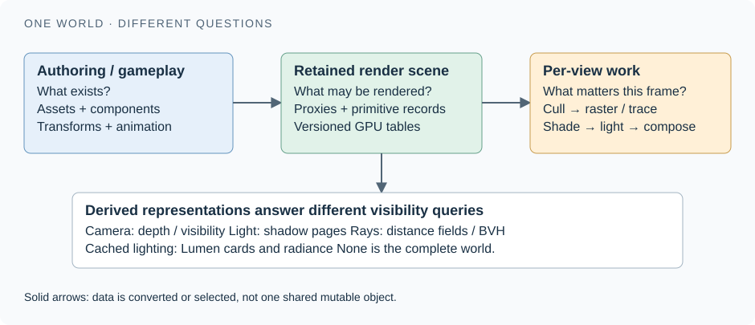

First separate what is shared from what is placed
An asset is reusable source content: the crate mesh, a wood material, a texture, a skeleton. A placement says where that content exists and which settings apply there. The 1,000 crates can share one mesh asset while having 1,000 transforms. Copying vertex buffers 1,000 times would waste memory; treating all crates as one transform would prevent independent placement. Shared geometry plus individual placement data solves both problems.
A view is the description of an observer: position, projection, viewport, and rendering options. It asks a question of the scene without owning the scene. Two cameras can observe the courtyard at once; a shadow view can observe it from the lamp. A frame is a particular execution that updates state and produces images. This distinction explains why the courtyard should survive after one frame's visibility list and depth texture have been discarded.
Unreal implements this split explicitly. FScene stores renderer state that outlives individual views and frames. It normally represents a UWorld to the renderer, but can also serve an editor preview with no UWorld. Therefore “the rendering scene” is a distinct object with a distinct responsibility, not another name for a level file. FScene's stated ownership
The small graphics vocabulary we need first
A mesh describes a shape using connected vertices; three vertex references usually form a triangle. A vertex can carry more than a position. Its normal describes a direction perpendicular to the surface for shading. A tangent points along the surface. UV coordinates are two numbers telling a shader where to sample a texture, like coordinates on a sheet wrapped around the mesh. These attributes let the same shape carry detailed appearance.
Rasterization finds which screen samples a projected triangle covers. Depth testing selects the nearest accepted surface when triangles overlap. A draw call asks the GPU to process geometry using configured shaders and state; a compute dispatch runs a grid of GPU work without requiring triangle drawing. A pass groups work for one rendering purpose, such as obtaining depth or applying lighting. Later we will separate selecting a visible surface from evaluating its material and lighting.
Level of detail (LOD) means choosing an appropriate amount of detail for a view or cost target. A distant crate needs fewer visible details than one filling the screen. Culling rejects work that cannot contribute to a particular query. Neither selecting a simpler representation nor rejecting one camera's work deletes the underlying asset.
“Primitive” has two meanings
In graphics APIs, a primitive often means a triangle, line, or point. In Unreal's scene system, a scene primitive is a renderer-managed object associated with renderable component state. One static mesh component can become one scene primitive yet contain millions of triangles. One instanced component can represent many copies of its mesh. Conversely, a single actor can have several renderable components, each with its own primitive. Never estimate draw count, instance count, or triangle count from actor count alone.
Keep a small mental ledger for the courtyard. “Crate mesh” names shared geometry. “Crates component” names an engine component containing placements. “Crates proxy” names the renderer-facing description. “Crate instance 37” names one placement within that description. “Wood section at LOD 1 in the shadow pass” names a potential unit of drawing. These are related identities, not interchangeable labels.
Map the model to Unreal's authoring hierarchy
UWorld is the engine world, with a pointer to the renderer's FSceneInterface. AActor is an entity in that world that groups components and behavior. An actor's transform is obtained through its RootComponent; an actor is not itself a GPU mesh. UActorComponent is the general component base. Its spatial subclass, USceneComponent, adds a transform and parent/child attachments. The source deliberately states that this class alone provides neither rendering nor collision. World's scene interface Actor root transform Scene component contract
UPrimitiveComponent extends the spatial component for primitive participation. Concrete descendants supply geometry-specific behavior: for example, static mesh, skeletal mesh, and instanced static mesh components. Its virtual CreateSceneProxy() is a boundary where a component supplies its renderer representation; the base implementation can return null. Merely creating an actor or a transform node therefore does not guarantee anything drawable is registered. Primitive component and proxy creation
For the guard, use an actor for gameplay ownership, a skeletal mesh component for the body, and another component attached to a hand socket for the lamp's visible housing. A light component describes illumination separately. Moving the actor moves its root and attached components, but the renderer still receives separate kinds of data for body geometry and light emission. The tree expresses the relationship; it does not force those consumers into one data layout.
Chapter 02 · Code & ownership
Cross the game-thread / render-thread boundary deliberately
After this chapter: trace one component from registration to renderer state, and explain why changing or destroying it requires an ordered update. Prerequisite: assets, placements, and views.
Gameplay and rendering have different schedules. While gameplay moves the guard, rendering may still be preparing work based on an earlier update. If rendering followed a raw pointer into mutable gameplay fields, it could read the new position with the old bounds or observe an object being destroyed. The engineering problem is not merely sharing a class definition. It is agreeing which version of the data each consumer can safely read.
Unreal's conventional component path solves this with a render proxy: a representation whose render-relevant state is copied or otherwise safely made available to rendering. FPrimitiveSceneProxy is the engine-facing polymorphic part; a static mesh proxy knows how that kind of object supplies drawing data. FPrimitiveSceneInfo is the renderer's bookkeeping for that proxy: its scene membership, cached meshes and commands, spatial association, and links to specialized systems. The latter's source describes the proxy/info relationship as one to one. This does not mean one actor, one triangle, or one draw. Proxy boundary Primitive scene bookkeeping
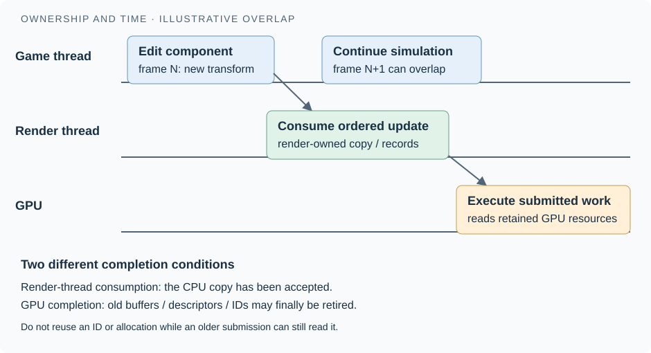

Worked example: placing the stone arch
- Authoring state becomes eligible for rendering. During
UPrimitiveComponent::CreateRenderState_Concurrent, Unreal updates bounds and, if scene admission conditions are met, adds the component through a registration context orGetWorld()->Scene->AddPrimitive(this). A bound is a simple enclosing box/sphere used for conservative visibility decisions. Registration entry - The renderer prepares a representation.
FScene::BatchAddPrimitivesInternalobtains or creates a proxy and skips entries with no proxy. It createsFPrimitiveSceneInfoand captures transform and bounds into a creation command. The current source also supports descriptor-based entry paths; the component route is the introductory path, not a claim that every renderer object must originate from a traditional actor. Creation and copied state - An ordered render command performs the handoff.
ENQUEUE_RENDER_COMMAND(AddPrimitiveCommand)captures the command data. On the rendering side it sets the proxy transform, creates render-thread resources, and callsAddPrimitiveSceneInfo_RenderThreadin that order. “Registration” is consequently a process, not proof that the GPU has already drawn the arch. Ordered handoff - Renderer-owned state is derived. The scene maintains densely packed arrays of proxies, transforms, bounds, and flags, alongside per-primitive state. These arrays suit bulk rendering work better than repeatedly walking gameplay objects. This is a second organization of the scene, rather than the component attachment hierarchy moved wholesale onto the GPU. Packed scene arrays
The abstraction boundary is visible in the module layout. FSceneInterface, in Engine's public headers, exposes operations such as add, remove, transform update, and instance update. FScene, in Renderer private code, chooses how those operations affect renderer data. Engine components need not embed private renderer structures in their own definitions. Scene interface Private scene implementation
Updating a thing is different from replacing it
Dragging the arch changes its transform and bounds while its mesh can remain the same. SendRenderTransform_Concurrent updates bounds and calls the scene's transform update. The implementation packages current transform, local/world bounds, attachment-root position, and an optional previous transform. Some primitive types request proxy reconstruction; otherwise the update is sent to the existing representation. This is why an engine should distinguish a transform edit from a geometry replacement: their invalidation costs differ. Transform notification Transform update payload
Deleting the arch also requires ordering. The component releases its association with the proxy; an enqueued rendering command removes scene information and destroys render-thread resources. It is unsafe to turn “gameplay no longer needs this” directly into “free all memory now”: queued CPU work and GPU work may still reference resources. Unreal's removal path supplies a concrete example of deferred renderer teardown; a custom engine still needs its own explicit rules for retiring GPU allocations after their last use. Removal ordering
The important invariant is stated directly in GetDynamicMeshElements's contract: gameplay state must be mirrored on the proxy; rendering must not dereference mutable UObjects to collect drawing data. The callback should describe what to render, not mutate the proxy. Treat “render thread” here as the rendering ownership domain; modern code can launch parallel rendering tasks rather than execute every operation serially on one OS thread. Mesh collection and thread safety
How this suggests a modular design
Architectural interpretation for Arda: split responsibilities into a gameplay-facing scene API, queued change records, persistent renderer storage, geometry providers, and consumer-specific derived structures. An update record should identify what changed, carry the necessary values, and state when it becomes visible. Providers should describe their geometry and supported features. A shadow system should own shadow-specific state; an illumination cache should own its cache. Otherwise every new rendering feature adds fields and conditionals to a single giant object.
This is more than an aesthetic preference. A crate transform edit should update placement data, affected bounds, motion history, and dependent lighting structures; it should not force the mesh importer to run. A wood color edit should update material data; it should not rebuild collision geometry. Explicit dependencies make those consequences predictable.
The inspected Unreal source includes a concrete extension pattern: ISceneExtension holds scene-associated state, can create an updater receiving pre/post scene change sets, and can create a renderer extension with view and rendering callbacks. The ordering comments matter: a pre-visibility callback may run after scene updates but before GPU Scene updates. This is an internal renderer mechanism, not a promise that arbitrary new render passes can be added through a stable public plugin API. Scene extension and sequencing contracts
Chapter 03 · GPU Scene & identity
GPU Scene is a database for rendering, not the whole world
After this chapter: follow an instance ID into transform and primitive data, distinguish stable identity from an array position, and predict what must change when a crate moves. Prerequisite: renderer-owned state and updates.
A traditional draw can bind one object's transform and then issue a draw for that object. Repeating that process 1,000 times makes the CPU orchestrate many small state changes. A more scalable arrangement puts object data in shared GPU buffers. Draws, compute shaders, and visibility algorithms carry compact identifiers and fetch the required records. The GPU can then choose visible instances without asking the CPU to bind a distinct transform for each one.
In Unreal, FGPUScene owns persistent pooled buffers for primitive data, instance data, instance payloads, and lightmap data, with upload helpers. Its Update operation pulls pending scene updates and uploads primitive and instance data. GPU Scene does not contain all vertex buffers, material shader code, gameplay components, or every illumination representation. It is a shared scene-data layer that other rendering systems consume. Persistent GPU Scene buffers Update contract
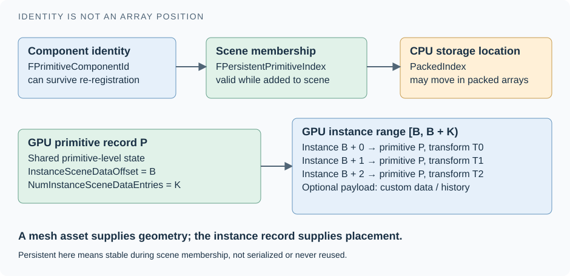

Three levels of GPU data
Memory vocabulary: a float4 is a group of four floating-point numbers. An offset identifies where data starts within a buffer. A stride is the distance between successive records; “fixed stride” means every record starts the same distance after the previous one. Thus an array lookup can compute start + index × stride. A flag tells the reader whether an optional field exists or how it is encoded. The exact units and packing must be shared by writer and reader.
Primitive data holds values shared at the scene primitive level: flags, transform-related values, bounds, the starting offset and count of instance records, and references used by other features. FPrimitiveUniformShaderParameters explicitly includes current and previous transforms. FPrimitiveSceneShaderData packs corresponding GPU data into fixed-stride float4 records; SceneData.ush provides shader-side access. The CPU writer and shader decoder must agree on the binary layout. Primitive parameters Packed primitive data Shader primitive lookup
Instance data describes an individual placement and its association with a primitive. The decoded shader structure contains a primitive ID, relative instance ID, current/previous transforms, bounds, flags, and feature-specific values. Do not mistake this convenient decoded struct for the exact memory image in the buffer: the decoder can reconstruct values and conditionally decode compressed transforms depending on the platform. Decoded instance structure Instance decoding
Payload data holds optional per-instance information. Flags select fields such as local bounds, dynamic transform data, light/shadow UV bias, skinning-related data, and custom data. The shader computes a payload start from the primitive's payload offset plus the instance's relative ID multiplied by a payload stride. This avoids treating every instance as if it required every possible feature. It also creates a strict contract: offsets, strides, flags, and writer/reader layouts must agree. Payload addressing and flags
A light/shadow UV bias is an offset in texture-coordinate space, used when selecting a region of lighting data. It changes where a lookup reads, not where the instance is placed. You do not need to remember every optional payload field yet; remember that its flags and address calculation must describe the same layout as the code that uploaded it.
Four IDs that must not be confused
| Name | Meaning | Safe expectation |
|---|---|---|
FPrimitiveComponentId | Identifies the engine component. | Remains associated with the component across re-registration. |
PackedIndex | Position in compact CPU scene arrays. | May change when primitives are added or removed; do not retain it as durable identity. |
FPersistentPrimitiveIndex | Renderer identity while a primitive remains in the scene. | Stable between scene add/remove, not guaranteed across proxy recreation. |
| Instance scene-data offset / instance ID | Address within GPU instance storage. | An allocation or lookup address, not a permanent gameplay entity ID. |
The first three distinctions are explicit in FPrimitiveSceneInfo; GPU Scene allocates and frees ranges of instance slots. In this checkout, dirty updates use persistent primitive indices, and shader GetPrimitiveData uses the primitive ID as the persistent primitive index. Older descriptions that equate every GPU primitive ID with the current packed CPU-array index are therefore misleading for this source. Component identity Packed versus persistent indices Instance allocation Current shader addressing
Design implication: expose a generation-checked handle to clients of Arda, then resolve that handle to compact CPU/GPU storage. This is a recommendation, not a claim that Unreal's IDs use that exact scheme. Generation checking prevents an old reference to deleted crate 37 from silently naming a newly allocated lamp that reused the same slot.
Worked example: crate 37 moves
- The shared crate vertices remain unchanged; placement data changes. Bounds must continue enclosing the rendered shape.
- The renderer receives the changed placement state. GPU Scene marks the affected primitive dirty. Its queue avoids inserting an already-dirty primitive again and combines dirty flags. This coalesces multiple notifications before upload. Dirty-state accumulation
- GPU updates refresh required records. The precise upload granularity depends on the provider and update path; “one crate moved” does not universally guarantee a single record-sized transfer.
- The frame retains enough previous state to compute motion. For instance data with dynamic payload, the shader reads previous transform data; otherwise it derives a previous transform using the primitive's current-to-previous relation. Merely overwriting every previous transform with the new transform would erase object motion. Previous-instance transform reconstruction
- Visibility and drawing use the updated records. Shadow, ray tracing, and illumination consumers may need their own updates too; a correct main-camera image alone does not validate every representation.
Why preserve history in the scene representation? Temporal rendering compares today with yesterday. Motion vectors describe where a surface came from; reprojection uses them to find previous image samples. The guard also has deformation history, which cannot be reduced to its actor transform alone. Consequently “previous state” is a first-class requirement, not optional metadata added after lighting works.
Culling selects work; it does not delete the scene
Culling rejects work that cannot affect a requested image. A frustum test rejects a bound outside the view volume; an occlusion test asks whether other geometry hides it. A hierarchical depth buffer, or HZB, stores increasingly coarse summaries of depth so larger regions can be tested efficiently. These tests should be conservative: rejecting a potentially visible object produces a missing surface.
Unreal's instance-culling context consumes GPU Scene and builds rendering commands. Its shader performs distance/screen-size and frustum tests, and can apply occlusion tests when the path and configuration enable them. The context documentation makes HZB occlusion conditional on a supplied previous HZB and its enabling setting. Do not read “GPU driven” as “all visibility is universally performed by one GPU pass”; Unreal also has CPU visibility work and specialized Nanite culling. Instance culling context Culling shader
For the 1,000 crates, suppose 120 survive a particular view's tests. The scene still contains all 1,000 placements. The view's output identifies the surviving instances and supplies draw counts or indirect arguments. Another shadow view can select a different subset. An indirect draw reads its draw arguments from a GPU buffer, allowing the GPU's culling result to determine work without first reading that count back to the CPU.
Chapter 04 · From mesh to draw work
Geometry providers describe; passes decide how to draw
After this chapter: explain how one surface participates in several passes, when cached draw descriptions remain valid, and where the render graph belongs. Prerequisites: proxies and addressable scene data.
The stone arch needs a depth result, surface material evaluation, and possibly several shadow results. If its proxy implemented all these passes itself, every new pass would require edits to every geometry type. Unreal's conventional mesh pipeline inserts a reusable description between geometry-specific code and pass-specific code. This is the central modularity lesson: describe the available mesh once; interpret that description for a particular rendering task.
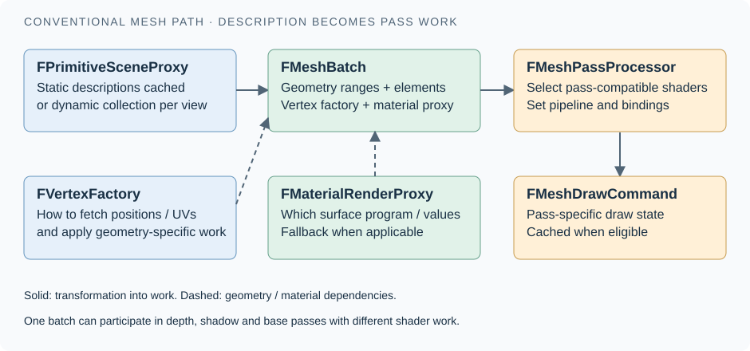

Follow one arch surface
The proxy supplies an FMeshBatch. A batch identifies a vertex factory, material render proxy, and one or more elements containing ranges such as index-buffer offsets and primitive/instance counts. Its pass-relevance flags indicate participation in material, depth, or shadow work. A batch is neither a complete actor nor necessarily exactly one final hardware draw. Mesh batch and relevance flags Element ranges and indirect arguments
A FVertexFactory adapts a geometry data source to shader inputs. Conceptually, it answers “how do I obtain this vertex's position, normal, UVs, and instance-related data?” A static mesh and a skinned mesh require different answers, but both can participate in material evaluation. The source defines the factory as a vertex data source linked into a vertex shader and exposes its streams and shader-binding machinery. It is an adapter, not the owner of the entire scene or a material by itself. Vertex factory contract
A pass-specific FMeshPassProcessor accepts the batch, decides whether it belongs in that pass, selects appropriate shaders and render state, and constructs FMeshDrawCommand objects. A shadow pass needs depth from the lamp's view; a base pass needs material outputs from the camera's view. The command stores resource bindings, vertex streams, index buffer, pipeline state, and draw parameters near the RHI boundary. RHI means Render Hardware Interface: Unreal's abstraction over the underlying graphics API. Processor input and output Draw command data
The material and vertex factory are therefore orthogonal inputs to shader selection. Geometry code supplies the mechanism for fetching/deforming vertices; material code describes surface behavior; the pass asks which outputs it needs. They still have compatibility constraints. A material feature can require a particular shader permutation or unsupported geometry capability; modularity does not imply every combination is valid.
Cache what remains true across frames
DrawStaticElements supplies descriptions that can be retained after scene insertion. GetDynamicMeshElements collects descriptions for relevant views when required. The static mesh implementation iterates LOD resources and sections when producing batches: one component can have several material sections and several candidate levels of detail. Calling something a “static mesh” does not imply the engine emits one permanently fixed draw or that it can never use a dynamic collection path. Static collection callback Dynamic collection callback Static mesh batch construction
Draw commands can themselves be cached when their bindings remain valid. That is why transform data in a shared buffer is useful: its contents can change while a command's binding to the buffer stays the same. In contrast, replacing a referenced buffer or changing shader selection can require invalidating cached commands. The source explicitly requires every referenced resource to outlive the command; the command does not manage those lifetimes for you. Cache and resource-lifetime contract
Instancing and command merging exploit compatible work. The 1,000 crates sharing geometry and a material offer opportunities to reduce setup and draw overhead; different material variants, per-command bindings, passes, LODs, and visibility can divide that work. “One mesh asset” does not guarantee “one draw.” A useful performance investigation counts material sections, resulting pass commands, visible instances, and actual GPU cost separately.
Nanite has its own geometry selection, rasterization, and material-work machinery. The general separation of persistent scene data, visibility, and shading still helps explain it, but forcing every Nanite cluster through this conventional FMeshBatch-to-draw narrative would be inaccurate. The scene source separately stores cached conventional mesh commands and Nanite raster/shading pipelines. Parallel command families in FScene The Nanite chapter follows that alternate route.
RDG schedules work; the scene preserves meaning
The Render Dependency Graph, or RDG, records passes and their resource reads/writes. FRDGBuilder compiles and executes that graph, deriving resource barriers and lifetimes from declared pass parameters. It answers “what work must happen, with which resources and dependencies?” The persistent scene answers “what objects and rendering state currently exist?” Conflating them makes a scene disappear with a frame or makes every temporary render target accidentally permanent. RDG execution contract
Unreal makes the connection by registering existing GPU Scene pooled buffers as external RDG resources. Their owner can retain them across frames while each graph tracks the access needed for its execution. Depth, visibility intermediates, and lighting outputs can have different lifetimes. An RDG buffer reference belongs to a graph's execution context; it is not a durable asset handle. Importing GPU Scene buffers
For Arda, the practical boundary is a persistent scene service that owns geometry/material references, identities, instance state, and update tracking; a frame builder imports its GPU resources into Arda's render graph and declares culling, drawing, and lighting work. The graph handles execution dependencies. The scene handles semantic invalidation: which bounds, histories, draw descriptions, and lighting representations became stale. Neither responsibility can replace the other.
Read next: the geometry families, then materials and shading. For a compact official companion, see Epic's Mesh Drawing Pipeline. The source references here govern the precise current implementation; older threaded-rendering articles remain useful conceptually but contain superseded callback names.
Chapter 05 · Geometry families
Geometry: what shape is actually in the scene?
A scene object needs a spatial description before it can receive a material or be lit. That description might be a triangle surface, a strand, or a density field. Unreal also has many ways to author, repeat, animate, and store those descriptions. Keeping these categories separate makes an extensible renderer possible.
What you will learn: identify the data behind an Unreal object, follow it from asset to component to renderer, and choose an appropriate representation for a courtyard containing stone arches, crates, a guard, trees, glass, and smoke. Keep the earlier distinction between reusable assets and placed components in mind.
Four questions, not one inheritance tree
Ask four independent questions about the arch. What is its shape? An indexed triangle surface. How can it change? It can move as a rigid object; a shader might displace its vertices. How is it organized? A shared mesh asset can have many placed instances. How does a renderer store and visit it? Conventional vertex/index buffers or Nanite's compressed clusters. “Static mesh,” “instance,” “animated,” and “Nanite” therefore answer different questions. Treating them as mutually exclusive geometry classes produces a design that becomes awkward as soon as someone asks for an instanced, animated Nanite tree.
There is a fifth distinction: authoring representation versus runtime representation. A cube made with a modeling tool, a scanned statue, and a procedural mesh can all reach the GPU as triangles. A spline is often a control curve that deforms a triangle mesh. A Landscape begins with height samples and produces terrain surfaces. The editor's names describe useful workflows; they do not imply that the GPU has a special “courtyard,” “foliage,” or “road” primitive.
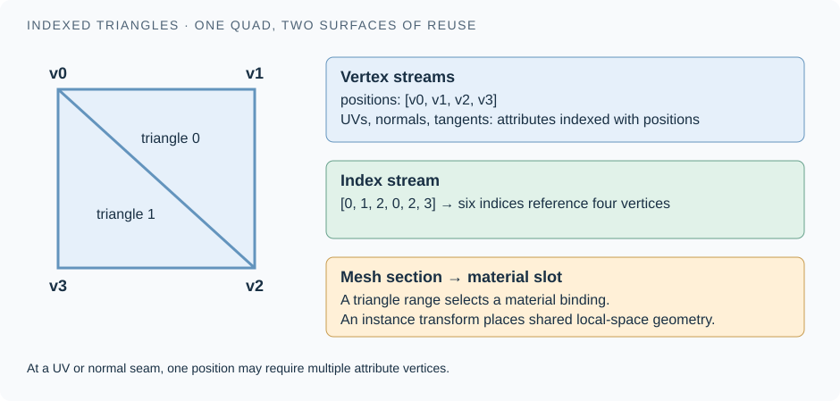

Start with one indexed surface
A vertex is a record, not just a position. For an ordinary textured surface, relevant attributes include position, normal, tangent, texture coordinates, and optionally color. An index buffer names records in the vertex buffers: the sequence 0, 1, 2, 0, 2, 3 forms two triangles from four records. Sharing a record avoids repeating its attributes. A UV seam or hard normal may require two records at the same position, because the attributes on the two sides differ. Counting unique spatial points therefore underestimates rendering vertices.
Unreal's conventional static-mesh render data exposes this layout directly. FStaticMeshVertexBuffers groups separate position, tangent/texture-coordinate, and color buffers. FStaticMeshLODResources adds indices and sections for one level of detail. A section is a range of geometry with a material assignment and associated rendering settings. The wooden crate can use one section for wood and another for metal without becoming two gameplay objects. Static mesh streams LOD resources and sections Section-to-material mapping
UStaticMesh owns reusable mesh render data; a placed UStaticMeshComponent supplies an instance's transform and overrides. In the conventional renderer, a vertex factory interprets the vertex streams for a shader, while mesh sections become draw submissions for the relevant passes. The asset also stores a Nanite resource representation when built for that path. Thus changing the rendering backend need not change the gameplay identity of the arch. Asset ownership Nanite alongside conventional resources
Concrete prediction. Move the arch two meters: update instance state. Repaint its material: update an appearance binding or parameter. Remodel its opening: update geometry and dependent derived data. These operations have different costs because they modify different data. A good Arda API should preserve that distinction instead of exposing one all-purpose “mesh changed” operation.
The main surface families
A skeletal mesh remains a triangle surface, but its vertices also identify influencing bones and their weights. A pose supplies transforms; skinning uses those transforms to produce deformed positions. The guard can turn an elbow while preserving triangle connectivity. Unreal's FSkeletalMeshLODRenderData contains the familiar vertex and index data together with skin weights, cloth mapping, and morph-target data. These are deformation inputs layered onto a surface description. Their presence does not imply that every renderer path supports every combination. Skeletal render data
Landscape is a heightfield: conceptually z = h(x, y) over a regular sample grid. This is compact and makes terrain editing and level-of-detail selection predictable. One height per horizontal location cannot describe an overhang or a cave ceiling; place a separate mesh for those shapes. ULandscapeComponent keeps height and layer-weight textures, and terrain rendering interprets them as a surface. Layer weights select or blend terrain appearance; they are not additional geometry. Landscape height and weight data Epic's Landscape technical guide
Enabling Nanite on a Landscape creates another rendering representation of that terrain. It does not erase the original heightfield subsystem: Epic documents that ordinary Landscape data remains necessary for consumers such as Runtime Virtual Textures and water. Budget both representations and rebuild the Nanite data after sculpting. This is an early example of a central scene-design rule: one authored object can need several derived representations with separate update schedules. Nanite Landscape workflow and data residency
Procedural and dynamic meshes describe how triangles are produced and edited. A runtime generator might create the courtyard's damaged plaster. UProceduralMeshComponent accepts positions, triangle indices, and attributes by section. Updating existing vertices can preserve topology; creating a new section can replace topology. UDynamicMeshComponent instead wraps a UDynamicMesh, backed by FDynamicMesh3, with facilities for partial render-buffer updates and chunking. Neither name alone promises Nanite, a distance field, or a cheap ray-tracing update. Those consumers need their own build/update integrations. Procedural mesh section contract Dynamic mesh data and update model
A Geometry Cache plays back recorded geometry animation rather than deriving all motion from a skeleton. Unreal separates a UGeometryCache asset's tracks and materials from UGeometryCacheComponent playback. This is useful when a simulation or imported animation has a baked surface evolution. Think “sample the recorded surface at time t”; do not assume it shares the guard's bone-update costs. Geometry Cache asset Geometry Cache playback component
Repetition, bending, and breakage are separate dimensions
For 1,000 identical crates, keep one set of mesh resources and many instance records. An instance minimally needs its placement, but a practical renderer also tracks bounds, previous transforms, visibility flags, and optional custom data. UInstancedStaticMeshComponent derives from UStaticMeshComponent and stores per-instance data. UHierarchicalInstancedStaticMeshComponent adds a spatial cluster tree. That tree organizes instances for management/culling; it is distinct from an attachment hierarchy and from Nanite's hierarchy inside a mesh. A crate actor's parent, a HISM cluster parent, and a Nanite cluster parent are three different relationships. Instanced component data HISM spatial hierarchy
Instancing reduces duplicated resources and submission overhead; it does not make visible triangles, material evaluation, shadows, or per-instance motion free. If all 1,000 crates need independent rigid-body simulation, gameplay still needs identities and physics state that can map to rendering instances. Grouping for rendering should not force unrelated objects to share gameplay lifetime.
A spline mesh is a static mesh deformed by curve parameters. Unreal's USplineMeshComponent inherits from UStaticMeshComponent and carries FSplineMeshParams. A curved drainpipe still needs enough mesh vertices to bend smoothly; a curve controller does not magically turn a two-triangle strip into a smooth surface. Foliage placement likewise describes population and management of plants; an individual plant may use ordinary meshes, Nanite, material wind, or skinning. Spline mesh inheritance and parameters
A Geometry Collection represents destructible content as pieces and their relationships. The wall initially appears solid; Chaos can release pieces whose transforms then evolve. The rendering problem is to display the appropriate geometry under those changing piece transforms. Its fracture/constraint hierarchy answers a simulation question, not the same question as a Nanite detail hierarchy. UGeometryCollectionComponent references a rest collection and participates in Chaos notifications. Geometry Collection component Epic's Chaos Destruction overview
BSP/CSG brushes offer constructive authoring: add a solid, subtract another, and obtain a boundary. They remain useful for blockouts, and Unreal offers conversion to a static mesh. Do not base Arda's runtime draw interface on editor brush operations. Preserve the editable construction if needed, then derive a renderable surface and collision separately. Geometry Brush Actors and conversion workflow
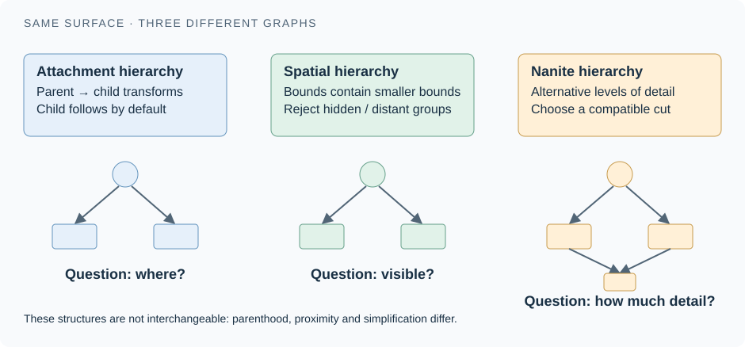

Strands, particles, points, and participating media
Hair strands use curves sampled by points and associated widths/attributes. Their thin coverage, motion, and scattering warrant specialized processing. Unreal's Groom workflow separates a groom asset, a binding to a deforming character, and a groom component in the world. Groom LODs can instead use textured triangle cards or meshes. The guard's hair therefore demonstrates one visual object with alternative geometry backends, selected by quality and platform capability. Bindings make root motion follow the character; simulation and interpolation can produce finer motion. Groom assets, bindings, and components Groom platform support
Niagara particles are simulation records; a renderer decides their visible form. A sprite renderer turns particle attributes into camera-facing or oriented quads, a ribbon renderer connects a sequence into a strip, and a mesh renderer instances mesh geometry. The same emitter idea can therefore become sparks, a sword trail, or flying debris. Unreal declares separate renderer-property types for these choices. “Particle” is not a primitive that can simply be fed into every opaque mesh pass. Its chosen geometry, material domain/blend mode, and renderer determine participation. Sprite renderer Ribbon renderer Mesh renderer
Point clouds represent sampled locations, usually with color or other measurements. Unreal ships a LiDAR Point Cloud plugin with its own asset/component and point-display settings. That is meaningful engine support for point-cloud visualization, but it is not evidence that arbitrary points or Gaussian splats participate like triangle surfaces in every lighting, collision, shadow, and ray-tracing path. A splat covers screen area according to a reconstruction rule; a mathematical point alone covers none. An Arda point/splat backend must explicitly declare those rules and supported consumers. LiDAR plugin component and point-display properties LiDAR Point Cloud plugin overview
Smoke is a participating medium: light changes while traveling through it. A density field is fundamentally different from a boundary surface. A sparse volume stores occupied regions plus an indirection structure, avoiding dense allocation across empty space. Unreal's Sparse Volume Texture (SVT) is an asset for this data; a UHeterogeneousVolumeComponent uses a volume-domain material to render it. Static and animated SVTs can hold imported simulation frames. This workflow is documented as Experimental, so treat it as a capability to validate for a target project. It is separate from making a translucent smoke billboard. Heterogeneous Volume component SVT page-table data Sparse Volume Textures Heterogeneous Volumes workflow
Fog, clouds, decals, and lights further show why “everything is a mesh” is a poor scene contract. A decal projects a material onto existing visible surfaces; a light specifies illumination; a fog field specifies media. They may use bounding volumes or proxy geometry to schedule GPU work, but that implementation detail is not their authored meaning.
| Courtyard object | Underlying data | Unreal expression | First engineering question |
|---|---|---|---|
| Stone arch | Indexed triangles | Static mesh; optional Nanite | Which derived data must rebuilding the arch invalidate? |
| 1,000 crates | Shared triangles + instance records | ISM/HISM | Which instances changed since the last upload? |
| Guard | Triangles + weights + pose | Skeletal mesh | Which consumers need current and previous deformation? |
| Ground | Height samples + layer weights | Landscape; optional Nanite derivative | Where are holes/overhangs separate geometry? |
| Hair | Curves or triangle alternatives | Groom | Which geometry LOD is supported on this platform? |
| Smoke | Particles or a density field | Niagara sprites or SVT/volume | Are we approximating a surface appearance or integrating a medium? |
| Glass pane | Triangles + translucent appearance | Mesh with suitable material path | How does its lighting/compositing differ from opaque geometry? |
| Lamp | Mesh + emissive appearance + light state | Mesh and light components | Which component controls visible shape versus illumination? |
Chapter 06 · Nanite, step by step
Nanite: a different representation of detailed geometry
The next problem is scale. The arch may contain millions of tiny triangles, but a distant camera only has a few hundred pixels in which to show it. Nanite organizes geometric detail so the renderer can select and fetch a useful subset. Learn the conventional triangle path first; Nanite changes its storage and visibility work while retaining integration with materials and the wider scene.
The 2021 Nanite introduction is the conceptual starting point for this progression. Its release-era limitations are not the feature matrix for the local 5.8.1 source. We will follow the core triangle pipeline, then identify later extensions separately.
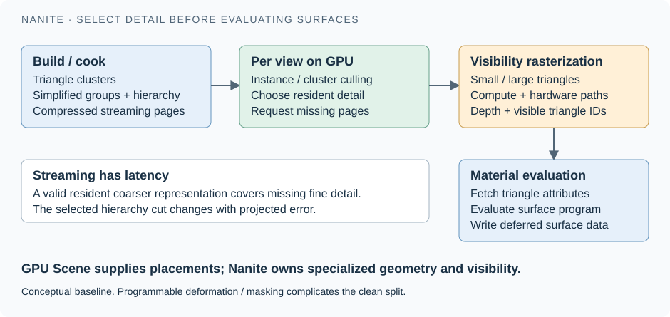

1. Build several compatible amounts of detail
Partition the source triangles into small clusters. Group neighboring clusters, simplify a group's surface, then repartition the simplified result. Repeat to construct coarser representations. Grouping before simplification allows adjacent pieces to coordinate their boundaries; independently simplifying arbitrary neighboring patches would risk cracks. This produces relationships between fine and coarse geometric regions. A DAG is a directed graph with no cycles; it expresses these relationships more accurately than imagining one independent LOD chain per original triangle. Unreal's builder exposes FClusterDAG, including mesh insertion, reduction, and selecting a cut. Nanite build hierarchy Merge, simplify, and repartition implementation
A cut is a selection of compatible detail nodes covering the required surface once. Close to the arch, the selection descends into finer detail. Farther away, a coarse selection is enough. This is different from rendering every fine level and then hiding redundant pixels. Detail selection prevents unnecessary downstream work.
2. Separate geometric relationships from storage pages
Clusters and hierarchy data are encoded into streamable resources. A page is a transfer/residency unit, not an actor and not necessarily one cluster. The hierarchy answers “which geometry is appropriate?”; page residency answers “which bytes are available now?” Unreal's Nanite::FResources has root data loaded with the resource, streamable pages, packed hierarchy nodes, and page dependencies. Keeping a coarse resident representation makes useful drawing possible while finer data arrives. Persistent and streamed Nanite data
For Arda, this suggests an explicit contract between LOD selection and residency. A missing fine page should have a valid coarser alternative. Evicting a page must respect dependencies and GPU use. Increasing polygon detail cannot remove storage bandwidth, decompression, memory, or synchronization costs; it changes how those costs scale and when they are paid.
3. Visit the view, not the entire source mesh
Instance culling rejects irrelevant placements; hierarchy traversal chooses detail and rejects invisible regions. Frustum culling tests against the camera's viewing volume. Occlusion culling tests whether already known depth can hide a region; an HZB is a hierarchy of depth summaries that makes such tests coarse-to-fine. Bounds must conservatively enclose the geometry, including allowed deformation, or visible triangles can disappear. View-dependent error controls refinement, and streaming requests ask for unavailable finer data.
The checked source names this work explicitly: FInstanceCull_CS and FNodeAndClusterCull_CS bind Nanite compute shaders; the cluster-culling shader carries streaming requests, visible-cluster work, and view-scaled LOD-error tests. These names identify GPU work, not per-object virtual calls. Instance culling shader Node and cluster culling shader Cull outputs and error test
4. Determine visible samples with two raster paths
Hardware triangle rasterization is effective for suitably sized triangles. Extremely small triangles can waste the fixed-function pipeline's usual work granularity, so Nanite also uses GPU compute rasterization. “Software rasterization” here means a rasterizer implemented in GPU shaders, not the CPU drawing pixels. The selected work goes through an appropriate raster path, and results contribute to a visibility representation identifying what won at a sample. The checked source registers compute micropolygons and hardware vertex/mesh/pixel raster shaders. The r.Nanite.ComputeRasterization switch explicitly permits routing all raster work to hardware when compute rasterization is disabled. Raster path control Raster shader implementations
Do not equate this visibility buffer with a finished colored image. It provides enough identity and depth information for later material work. Programmable raster features can make some material logic necessary earlier—for example, deciding whether a masked fragment exists or where a displaced vertex lies. “Visibility first” is a useful dependency model, not a promise that every material instruction runs only once at the very end.
5. Evaluate materials and join the rest of the frame
Visible geometry must still provide texture coordinates, normals, and other attributes. Material work is organized into shading work/bins, evaluates the relevant surface material, and fills the outputs consumed by later lighting. NaniteShading.cpp builds shading commands and dispatches the base pass with the Nanite visibility buffer. Nanite therefore replaces an important geometry/visibility route while feeding the renderer's subsequent surface-lighting stages. It does not replace the material system or automatically solve global illumination. Shading command construction Visibility-driven base pass
Worked arch experiment. Enable Nanite on a detailed opaque arch, inspect Nanite triangles/clusters while walking toward it, then inspect the lit result. The visible detail selection should change while the material assignment remains the same. Repeat with many arches: geometry sharing does not eliminate per-view visibility or material cost. Finally change streaming conditions or bounds and distinguish missing detail from incorrect culling; both can look like “Nanite broke,” but their causes and fixes differ.
Look at the same Unreal scene three ways
The images below are historical UE5.1-era examples from Epic’s 2023 article. They demonstrate three distinct representations; the version-sensitive claims in this study are checked against the local 5.8.1 source.

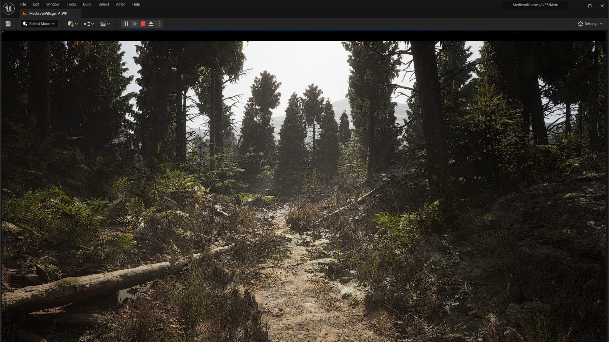

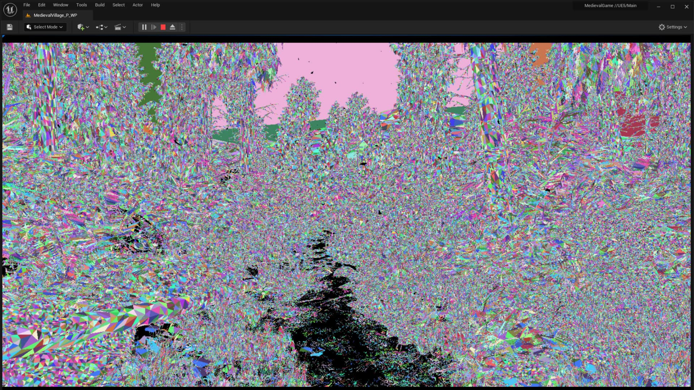

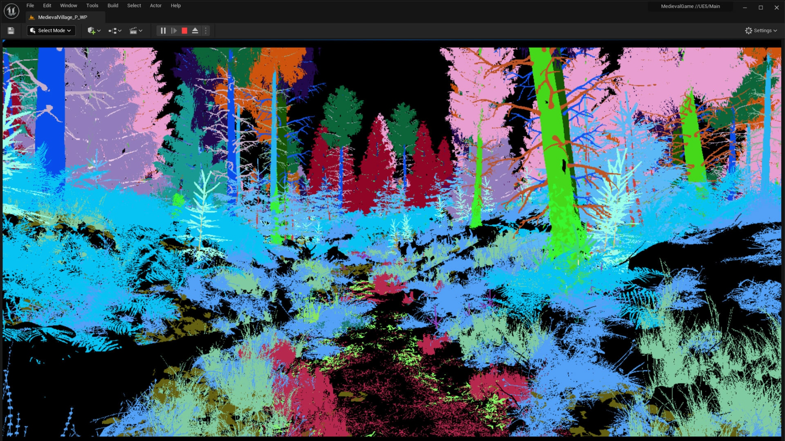
Read the version boundary before designing around a limitation
The local source enables support for Nanite spline and skinned meshes by default at the capability-switch level; the skinned component still checks runtime conditions. This rules out carrying the old blanket claim “Nanite only handles rigid static meshes” into this study. It does not imply every skeletal feature works: Epic's current overview explicitly excludes morph targets. Choose the guard's deformation features before choosing its renderer. Nanite feature gates Skinned component selection Current Nanite overview and feature support
Runtime Nanite tessellation is present: it subdivides/displaces geometry through a supported material path and has a runtime switch in this checkout. It is different from merely offsetting existing vertices, and different from building displacement into a mesh offline. Epic labels the tessellation feature Experimental. Settings, material configuration, bounds, and feature support still matter. Public guidance warns that discontinuous displacement can crack at seams; do not confuse the base hierarchy's compatible LOD boundaries with an unconditional guarantee for arbitrary displacement. Runtime tessellation switch Working with Nanite content, displacement, and splines
The 5.8 source also contains switches for Nanite foliage, assemblies, voxels, curves, and translucency. In the checked definitions these default off; translucency is explicitly described as research in progress. Epic describes Nanite Foliage as Experimental, combining repeated parts, skinning, and aggregate voxels for distant detail. Thus “Nanite is fundamentally triangle-based” is a useful explanation of the baseline, while “Nanite can never represent anything else” is already a bad extension boundary. Keep the courtyard's glass on a validated translucency path rather than assuming a disabled research switch makes all glass a supported Nanite surface. Checked defaults and research labels
Ray tracing introduces another representation choice. This checkout defaults r.RayTracing.Nanite.Mode to 0, using fallback geometry; its help also lists streamed geometry mode 1 and a CLAS mode 2. Presence in code is not a platform or production guarantee. Epic describes the native mode-1 route as Experimental. For an ordinary project, inspect the actual ray-tracing representation when reflections disagree with the visible arch, and validate feature gates before opting into a native path. Ray-tracing mode definition Fallback and experimental native ray-tracing guidance
Chapter 07 · Transforms & animation
Motion: update placement, deformation, and history separately
A renderer needs the object's current shape, an enclosure for visibility tests, and enough previous state to explain how visible samples moved. Animation is therefore more than changing positions. This section derives the update contract from three different kinds of motion.
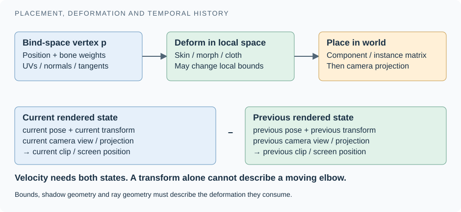

One transform moves an entire object
A coordinate space is a frame of reference: local coordinates measure a point relative to the mesh; world coordinates place it in the scene; camera coordinates measure it relative to an observer. A matrix encodes a mapping between these spaces. Composing matrices means applying one mapping and then another. An inverse undoes a mapping; a transpose exchanges its rows and columns. These operations explain the formulas below, but you do not need to memorize them to follow the ownership model.
A rigid placement maps local points into world space. Written with a conceptual column-vector convention, p_world = M_world × p_local. If an object is attached to a parent, M_world = M_parent × M_relative. Unreal's actual math API has its own multiplication conventions; translate the dependency, not the printed order, when writing code. A normal under non-uniform scale requires the appropriate inverse-transpose transformation rather than being treated like a position.
Why treat the normal differently? Stretching a sloped surface changes its slope. Its normal must remain perpendicular to that surface; simply stretching the normal like a point can break that relationship and produce incorrect lighting. For a nonsingular transform, applying the inverse transpose of the linear part and normalizing preserves the relationship. Translation moves the surface but does not change its orientation. This is a geometry/shading agreement, not an extra scene object.
USceneComponent stores an attachment parent and relative location, rotation, and scale. This is the transform hierarchy: moving the gate can move its attached lamp and light together. It does not mean the mesh asset belongs to the gate, and it is not the renderer's spatial culling structure. Absolute-transform flags can alter inherited behavior, so a scene editor must define attachment semantics explicitly. Scene-component transform state
Example: turning a crate modifies one instance transform while leaving all shared vertex data intact. Turning the guard's forearm changes only a portion of the guard's surface, so one object transform cannot express it.
Many transforms deform one surface
The bind pose is the reference pose in which the mesh was attached to its skeleton. A bone's inverse bind transform moves a reference vertex into that bone's reference coordinates; the current bone transform moves it into the current pose. Multiplying those mappings relates the original mesh to the posed result. The symbol Σ below means “add the contribution from each influencing bone.”
In linear blend skinning, a bind-pose vertex is transformed by several bone matrices and their results are weighted: p_deformed = Σ weight_i × boneFromBind_i × p_bind. The weights usually sum to one. Each matrix combines the current pose with the inverse bind transform so the original mesh's coordinate system is interpreted correctly. The component transform then places that deformed character into the world. Blending animations produces a pose; skinning converts the pose into surface positions. These are different stages.
Small example: suppose two bones place one vertex at local positions (1, 0, 0) and (1, 1, 0). With weights 0.8 and 0.2, linear blending places it at (1, 0.2, 0). Different vertices can have different weights, so the elbow bends while the chest stays comparatively still. A single world transform cannot express that difference.
For the guard, an animation graph can choose/blend a walking pose; gameplay, physics, cloth, or other deformers may contribute state; the rendering path consumes the resulting deformation inputs. The conventional GPU-skin path has dynamic data containing current and previous reference-to-local transforms and morph weights, and integrates with the GPU Skin Cache. Do not assume every character always takes one identical path: renderer features, skin-cache settings, and Nanite support affect where work happens and which results can be reused. Dynamic skeletal render inputs
A morph target supplies shape deltas, such as a smile, independently of bone articulation. A cloth mapping relates simulation geometry to rendered geometry. A mesh deformer may compute vertex changes through another algorithm. These distinctions matter for caching: two passes can reuse a computed deformed buffer only if they agree on the required pose, deformation settings, and frame. Skinning once and sharing its result can save computation while adding buffer memory and synchronization.
A material can move geometry too
World Position Offset (WPO) computes offsets for existing geometry from material inputs. Wind can bend tree vertices according to position and time without changing the CPU mesh asset. It does not by itself add triangles. A rough bark normal map changes shading normals without changing the silhouette; WPO changes positions; tessellated displacement can add and move samples. These operations look related in a material editor but require different geometric work.
This is why materials cannot be considered pure color functions. Culling needs bounds that account for allowed motion. Shadow and depth passes need compatible vertex displacement. A ray-tracing path must have an explicit way to update or approximate the displaced surface; a screen-visible offset does not automatically rebuild every acceleration structure or GI proxy. For Nanite, conservative per-cluster motion bounds are particularly important because visibility is decided at cluster granularity.
Previous state is part of the representation
For temporal rendering, compare the current visible point with where that corresponding point appeared in the previous frame. Camera movement, object movement, and deformation all contribute. Retaining only an old object transform cannot recover the previous position of the guard's waving hand. Unreal's conventional local vertex factory carries current and previous instance transforms; skeletal dynamic data separately carries previous bone transforms. Instance transform history in the shader Skeletal deformation history
Worked update: at frame N, gameplay advances the guard and evaluates its pose. Publish an internally consistent current state plus the previous transform/pose needed by rendering. Upload or compute deformation, update conservative bounds, and schedule consumers after their input writes. Visibility then finds the guard, surface passes evaluate its appearance, and velocity can explain its movement. Retire old buffers only after in-flight GPU work no longer references them. A teleport needs an explicit history policy; pretending it is normal smooth motion can produce large velocities and temporal artifacts.
Failure diagnosis. A tree that disappears only at maximum wind suggests inadequate bounds. A correct-looking guard with smeared temporal edges suggests missing or inconsistent previous deformation. A moving mesh with a stationary shadow suggests divergent displacement or update paths. Inspect bounds, velocity, shadow inputs, and the selected geometry backend before changing the lighting model. An Arda deformation interface should consequently describe current output, previous output, conservative bounds, update dependencies, and supported consumers—not just a function returning vertices.
Chapter 08 · Materials & shading
A material is a program; a light supplies its input
You can now place geometry and deliver it to the renderer. The next contract describes what happens when light reaches a surface. Learn to separate the material graph, the compiled shader, the surface parameters it computes, and the illumination those parameters respond to. Prerequisites: geometry representations and the CPU/render-thread boundary.
Three questions at one visible point
Two recurring terms: albedo describes the fraction or color of light reflected by a surface, often used informally for diffuse/base color; it is not the already-lit image. Radiance describes light traveling in a direction at a location. GI systems estimate incoming radiance, while the material determines how much of it reaches the viewer after interacting with the surface.
Imagine a camera looking at a red plaster wall in our courtyard. Geometry answers where did the camera ray hit? The material answers how does that location scatter or emit light? Lighting answers how much light arrives from each direction, and which paths are blocked? A red Base Color is a surface property, not the final red pixel. The same wall becomes dark in shadow, warm under a warm lamp, and brighter near a white floor that reflects light onto it.
A useful conceptual equation is outgoing light = emission + sum(incoming light × scattering response × visibility × angular weight). “Sum” stands for integration over incoming directions. A BRDF, or bidirectional reflectance distribution function, describes reflection as a function of incoming and outgoing directions; a BSDF additionally covers transmission through the surface. A shading model chooses a family of such responses. Material parameters choose a member of that family. A normal controls the orientation used by shading; changing it with a normal map does not automatically move geometry or its silhouette.
On Unreal's traditional material path, Base Color, Roughness, Metallic, Specular, Normal, and Emissive are inputs to this calculation. Roughness changes how concentrated a reflection is. Metallic changes how Base Color participates in diffuse versus specular response. Unreal's FGBufferData distinguishes these quantities, and IntegrateBxDF selects the appropriate lighting function by shading-model identity. The shader contains distinct responses for skin, cloth, hair, foliage, and other models: selecting Hair shading on a mesh does not turn its geometry into hair strands. GBuffer surface data · Lighting dispatch
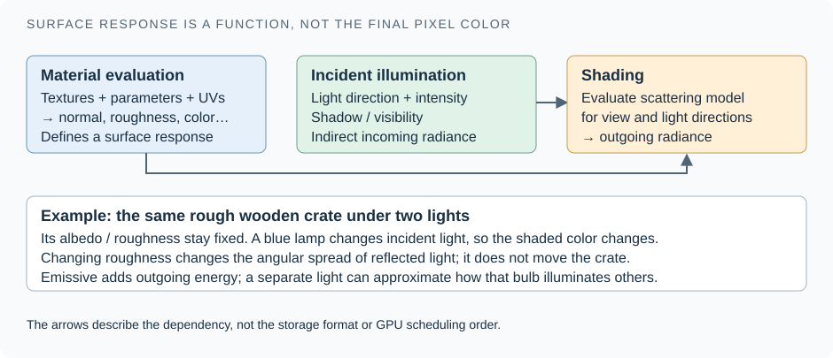

From artist graph to GPU program
An artist builds an expression graph in a UMaterial. A texture sample may feed a color multiply; a scalar parameter may control roughness. The graph is a description to compile, not a collection of UObject nodes that the GPU traverses every pixel. Material translation produces shader code that the engine combines with the work required by a particular pass and geometry input mechanism. On the conventional mesh path that mechanism is a vertex factory: an adapter that supplies positions, normals, texture coordinates, and any deformation-specific data.
The material asset also declares its domain, meaning the kind of job it performs: surface, deferred decal, light function, post process, or another supported domain. Its blend mode determines coverage and compositing behavior. Opaque surfaces block what is behind them; masked surfaces discard samples below a threshold; translucent surfaces mix with what is behind them. These choices affect pass eligibility and shader compilation, rather than merely changing a final color. The source stores domain, blend mode, and shading-model state separately. Usage flags include skeletal meshes, Niagara renderers, splines, instancing, and hair. Material authoring contract
UMaterialInstance adds a parent relationship and parameter overrides. Runtime scalar, vector, and texture parameters can reuse compiled code. Static switches instead choose compiled branches and can create new variants. A shader permutation is one compiled variant for a combination of requirements; it is not one variant per placed object. The material shader-map identity includes feature level, quality level, and static parameters. Mesh-material shaders also depend on vertex-factory type. Consequently, a single parent graph used by static props, skinned guards, and particle meshes can require several compiled programs. Instance storage · Compilation identity · Geometry-dependent shader type
The render-facing FMaterialResource derives from FMaterial, and its shader map supplies compiled shaders. FMaterialRenderProxy provides the render-side material and cached uniform expressions: values constant across many vertex or pixel evaluations, such as a tint. A proxy can select a fallback material while compilation is incomplete. FMeshBatch binds a material render proxy beside a vertex factory and mesh elements; pass processing then selects compatible shaders and bindings. A mesh section's material slot therefore joins a geometry range to appearance, rather than copying a material into every triangle. Compiled material resource · Render proxy and fallback · Mesh/material join
This division has a lifetime consequence. Material resources track game-thread and render-thread shader maps separately and defer deletion. Recompiling a shader can change its uniform-buffer layout; cached mesh commands may still refer to the old buffer. Unreal explicitly requires coordinated render-state recreation when replacing that layout. For Arda, treat a material-program change differently from a parameter-value change, and do not reclaim a referenced program or parameter allocation until submitted GPU work has finished. The last sentence is a design recommendation derived from this ownership problem. Shader-map lifetime · Cached binding invariant
The version-sensitive part: Substrate
Do not build a 5.8 mental model around “one fixed shading-model enum is the entire material system.” Substrate expresses appearance through scattering building blocks and operations such as mixing and layering. A closure is a compact description of a scattering response ready for a lighting integrator to evaluate. Layering a coat over a base can require more information than averaging two roughness values. The authoring graph, its compiled evaluation, and the representation written for lighting remain distinct.
This checkout documents three configurations: older projects without Substrate stay on the traditional path; existing Substrate projects retain their configuration; new regular templates enable Substrate with the Blendable GBuffer. Advanced templates can select the Adaptive GBuffer. Blendable enforces one closure per pixel and prioritizes predictable storage and cost. Adaptive stores a bitstream whose contents can vary per pixel, with more expressive material data and platform-dependent support. The renderer tracks closure counts and classifies work into tiles. Thus, “deferred shading” describes the separation between surface evaluation and lighting; it does not mandate one immutable memory layout. 5.8 configuration and format rules · Closure and tile storage · Epic: programming with Substrate GBuffer formats
Practice: repaint only the courtyard wall
Give material slot 0 a parent material containing a vector parameter named WallTint connected to its color input. On the game thread, with a valid registered UStaticMeshComponent* Wall, create an instance and change that parameter:
#include "Components/StaticMeshComponent.h"
#include "Materials/MaterialInstanceDynamic.h"
// Run once when the wall changes color; Wall and material slot 0 must exist.
if (UMaterialInstanceDynamic* Paint = Wall->CreateDynamicMaterialInstance(0))
{
Paint->SetVectorParameterValue(TEXT("WallTint"),
FLinearColor(0.6f, 0.025f, 0.015f));
Wall->InvalidateLumenSurfaceCache();
}CreateDynamicMaterialInstance installs the instance on the component and can reuse an existing dynamic instance; a missing material slot returns null. The component retains the assigned material. If your gameplay object separately stores a long-lived UObject pointer, use Unreal's reflected ownership conventions. The explicit Lumen invalidation requests refresh after the appearance change; it does not promise that every indirect-lighting history updates instantly. Do this for a meaningful change, not reflexively every tick. Creation and assignment behavior · Runtime parameter setter · Surface Cache refresh request
Chapter 09 · The deferred frame
How the scene becomes a deferred frame
The visible image is a sequence of queries over scene data. Learn which data each stage produces, why the order matters, and why the same primitive can participate several times. This section assumes material evaluation and GPU-visible scene records.
The GBuffer is a view-dependent surface record
A depth buffer records the nearest accepted depth for each camera sample. A GBuffer, short for geometry buffer, records attributes needed to shade that visible surface. It is screen-space storage recreated for a view, not the persistent world scene and not a copy of all mesh vertices. A wall hidden behind the guard has no ordinary opaque GBuffer record at those pixels, although it remains in the persistent scene and may still appear in a shadow or ray query.
On the traditional path, BasePassPixelShader.usf evaluates material inputs and encodes surface data for later lighting. Its world position can be reconstructed from camera depth and camera matrices rather than storing a full position at every pixel. Normal, roughness, color, and model-specific data use packed render targets. Exact packing depends on shader defines and project settings; the logical FGBufferData structure is not a literal byte-for-byte description of GPU textures. Emission and some lighting contributions can also be written during the base pass, so “the base pass never writes lit color” would be incorrect. Material evaluation and outputs · Logical decoded surface record
Read this as dependencies, not a universal stopwatch
The desktop deferred renderer builds a render dependency graph. Independent jobs may overlap, paths vary by settings, and indirect lighting can run asynchronously. The following sequence teaches the required products and consumers; it deliberately does not assert that every GPU pass runs in this exact serial order.
- Prepare scene and views. Apply pending scene changes, determine relevant primitives, update GPU records, and prepare draw or dispatch work. If hardware ray tracing is active, update its scene and acceleration structures. A raster visibility decision and a ray-tracing inclusion decision are different queries.
- Find camera-visible surfaces. A depth prepass and geometry visibility work establish surface coverage. Nanite performs its own cluster visibility and rasterization work; conventional meshes follow mesh draws. Depth supports occlusion, decals, and subsequent surface evaluation.
- Prepare shadows and surface modifiers. Shadow views or ray tests estimate whether each light reaches a point. DBuffer decals write surface modifications before their receiving base-pass materials consume them. Other decal stages exist, so not every decal is a pre-base-pass operation.
- Evaluate opaque and masked materials. The base pass produces the selected GBuffer or Substrate representation and applicable color contributions. It must use geometry, transforms, and material state that agree with the visibility result.
- Accumulate illumination. Direct-lighting passes read surface data and light/shadow information. Indirect diffuse lighting, ambient occlusion, and reflections use their own inputs and are combined into the frame. Ambient occlusion approximates local occlusion of ambient or indirect illumination; it is not another lamp or a substitute for a light's shadow.
- Compose specialized content and the display image. Translucency, water, fog, hair, and atmosphere have additional passes and ordering constraints. Post processing consumes scene color and auxiliary buffers for effects such as exposure, tone mapping, motion blur, and temporal reconstruction.
These relationships are visible in FDeferredShadingSceneRenderer: prepass, shadow rendering, before-base-pass composition, base pass, indirect lighting, direct lights, translucent composition, and post processing are explicit stages, with conditional and asynchronous scheduling around them. Early-frame dependencies · Lighting stages · Composition and post processing
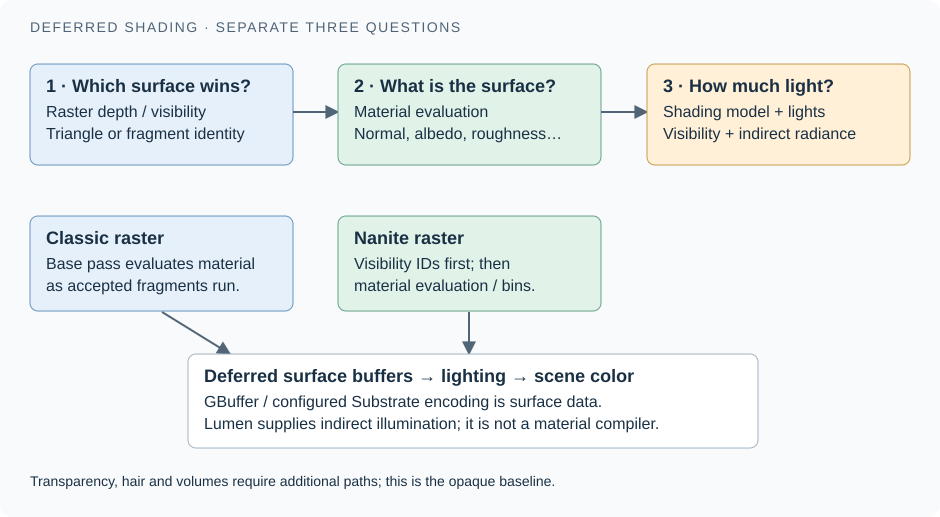

Nanite changes how surfaces are found and shaded
It is useful to separate visibility, deciding which triangle or cluster covers a sample, from material evaluation, computing the visible surface's parameters. Nanite can first record visibility, group samples into material shading work, and evaluate those groups. In this checkout, NaniteShading.cpp implements shading bins and material dispatch preparation, while the deferred base-pass call accepts Nanite raster results and Nanite shading commands. Nanite consequently joins the same downstream lighting system through compatible surface outputs. It is neither a complete lighting engine nor a replacement for material authoring. Nanite shading bins · Deferred integration
Lights are scene participants with their own proxies
A lamp is not a field embedded in the wall's material. A ULightComponent contributes a render-facing FLightSceneProxy and scene-managed light information. The proxy includes color/intensity-related state, shadow flags, lighting channels, light functions, and optional measured light-profile data. Scene code queues addition and updates to the rendering side. A light function modulates a light's contribution; it does not create receiver geometry. Light representation · Light registration · Light updates
The authored shape chooses the incoming-light model: directional lights model a distant source such as the sun; point and spot lights are local, with the latter adding cone limits; rect lights specify an emitting rectangle. Local-light components expose intensity units and attenuation radius separately from source size. A Sky Light follows a sibling component branch and supplies environment illumination from a captured scene or specified cubemap. None of these requires inserting a visible light-bulb mesh: that is a separate geometric and material choice. Local-light parameters · Rectangular source · Sky environment source
Mobility is also a lighting contract. Static lights can use precomputed lighting; stationary lights retain static placement while permitting selected runtime changes; movable lights use dynamic updates. Unreal distinguishes static lighting from static shadowing in its component predicates. In a baked-lighting workflow, lightmaps and precomputed shadow information are additional scene data. Our courtyard example instead assumes dynamic lighting with Lumen GI; mixing these configurations without stating the active policy makes comparisons misleading. Light mobility predicates
Changing a movable lamp's intensity changes incident light without changing the wall's triangles or material program. Moving the guard changes camera visibility and shadow visibility, even when its material stays constant. Material-driven World Position Offset is more demanding: the base-pass vertex shader adds it to position and separately handles previous-frame offset for velocity. Every participating representation needs an explicit policy for this deformation. A correct camera silhouette does not demonstrate correct ray-traced geometry or cached indirect lighting. Current and previous material displacement
Alternative renderer: desktop forward shading evaluates lighting during surface shading and uses a different feature/cost balance; Lumen is not compatible with that desktop Forward Shading mode. Mobile has separate forward and deferred configurations, platform capability gates, and different buffer arrangements. Do not infer mobile support from the word “deferred” alone, or assume that a desktop feature check describes every mobile renderer. Epic: Forward Shading · Epic: Lumen support boundaries
Chapter 10 · Effects & transparency
Decals, particles, glass, hair, and participating media
“Effect” is an authoring category, not one GPU representation. Starting from the deferred surface record, identify whether an effect changes a surface, creates surfaces, adds lights, or occupies a volume. That choice predicts which renderer contract it needs.
A wet footprint modifies an existing surface. A projected decal selects receiver pixels using its projection volume and material. The common DBuffer path accumulates color, normal, and roughness-related changes for the receiver to apply. It does not cut a footprint-shaped hole into the collision mesh. Receiver response, blend mode, projection bounds, ordering, and platform matter. Emissive and ambient-occlusion decal outputs have specialized handling; treating all decal outputs as ordinary GBuffer edits loses that distinction. Epic: decal materials and DBuffer behavior
Sparks create renderable instances. Niagara simulates particle attributes; a selected renderer interprets them as sprites, ribbons, mesh instances, lights, or other supported output. Simulation buffers and rendering buffers are different contracts even when both reside on the GPU. In the concrete mesh-renderer implementation, Unreal prepares particle render data, sets up GPU Scene elements, creates batches per mesh section, and can gather ray-tracing instances. This is evidence for that renderer, not a promise that every Niagara output participates in every ray-traced effect. Bounds that miss escaping sparks can cull them before their material ever runs. Niagara mesh adapter
Glass needs more than the nearest opaque record. Several transparent layers can contribute to one pixel. Ordinary opaque deferred storage cannot describe their ordered combination. Unreal therefore has separate translucency paths, often using forward evaluation. Lighting modes may use lower-resolution volume textures or per-pixel surface lighting. Sorting, overdraw, refraction, motion vectors, and reflection support must be considered explicitly. A translucent flag is not a guarantee of opaque-quality lighting. Epic: lit-translucency modes · Separate translucent passes
Fog occupies space between surfaces. A participating medium can scatter, absorb, and emit along an entire camera ray. Its representation describes density and scattering in volume cells rather than one mesh sample. Unreal's volumetric-fog pipeline has explicit volume-injection and light-scattering work; the result is integrated and composed with the surface image. Translucent smoke cards and a volumetric medium may depict similar smoke, but their visibility, lighting, memory, and failure modes differ. Volumetric injection
Hair needs both geometry and an optical model. A groom may render with strands, cards, or meshes according to its configuration and distance. Hair shading describes directional scattering; the representation supplies coverage and geometry. The two decisions should remain independently named in Arda. Water likewise has specialized behavior rather than being fully characterized by “a blue translucent mesh.” This distinction prevents a material system from silently becoming the owner of unrelated geometry or simulation systems. Hair geometry choices
Finally, receiving lighting, occluding lighting, and contributing emitted light are independent capabilities. A smoke effect can receive an approximate light-volume result without supplying the same opaque geometry to Lumen. A bright emissive particle can appear in the current screen while its offscreen contribution is absent or unstable. For a gameplay-critical flash, an explicit supported light and a separate visual particle effect make the intended contracts clear.
Chapter 11 · Lumen & GI
Lumen needs geometry to trace and surfaces to light
Global illumination asks about light arriving after interactions elsewhere in the world. That includes surfaces the camera cannot see. Learn the separate roles of trace geometry, cached surface appearance, lighting caches, and temporal history. Prerequisites: surface response and deferred frame products.
Three records of the same wall
The wall's camera triangles tell the rasterizer what is visible. A tracing representation lets a ray query discover that the wall exists somewhere in space. A lighting representation estimates what light leaves the hit region. These answer different questions. A correct triangle hit with missing surface-lighting data can still produce an incorrect reflection. A richly lit surface cache with no usable trace geometry cannot, by itself, make rays discover arbitrary geometry.
Lumen begins many queries with screen traces: tests against information already available for the camera view. They are useful when the visible surface differs from a simplified world representation, but cannot reliably supply hidden or offscreen surfaces. In TraceScreenProbes, screen tracing precedes hardware-ray-tracing or software-tracing work. A screen probe samples incoming light near visible surfaces; it is a sampling device, not another kind of mesh. Remaining queries require persistent world-space data. Screen-probe trace selection
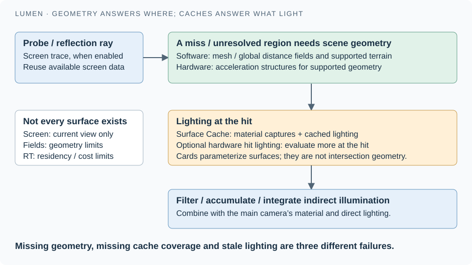

Two ways to ask where a ray hits
Software tracing can use signed distance fields. A distance field stores distance to a nearby surface; a signed field also distinguishes inside from outside. The renderer can advance a ray through empty space using these distances. Individual mesh fields preserve local detail, while a merged global field supports broader queries at coarser resolution. Lumen also has heightfield tracing for appropriate terrain data. The screen-probe implementation has distinct mesh-SDF, heightfield, and global tracing paths; which work runs depends on settings and available scene data. Software trace paths
The representation imposes content rules. Thin structures can disappear in a coarse field, and material-driven deformation does not automatically rebuild a baked mesh field. Epic documents static meshes, their instanced variants, and Landscape as software-traced scene inputs, with World Position Offset unsupported by this route. Inspect the Mesh Distance Fields and Global Distance Field view modes when a wall leaks light; changing roughness cannot repair missing geometry. Epic: software-tracing geometry and material limits
Hardware ray tracing traverses acceleration structures built from supported geometry. For triangle meshes, a BLAS (bottom-level acceleration structure) indexes geometry; a TLAS (top-level acceleration structure) indexes placed instances and their transforms. The ray-tracing hardware tests these structures, not the entire Nanite visibility buffer, not arbitrary UObjects, and not the Surface Cache atlas. A rigidly moved instance can often reuse its geometry structure while updating instance placement. A skinned guard changes vertex positions, requiring an appropriate geometry update or rebuild in addition to placement data.
Unreal's ray-tracing scene explicitly declares dependencies between geometry-structure writes and top-level builds, so the GPU does not traverse data before its producer finishes. Its deferred renderer updates and builds the ray-tracing scene as separate work. In this checkout, Lumen's hardware mode defaults to enabled when available; that still depends on project support, platform, and runtime eligibility. Acceleration-structure dependencies · Scene update/build · Lumen hardware-mode gate
For Nanite, never assume the triangles seen by a hardware ray are automatically identical to the rasterized triangles. This source defaults r.RayTracing.Nanite.Mode to fallback meshes, and also implements streamed-out geometry and CLAS modes. CLAS means cluster-level acceleration structure and requires a compatible implementation and platform. The fallback can therefore explain a reflection or self-intersection mismatch, but “hardware tracing always uses a fallback mesh” is too broad for 5.8. Check the active mode, platform, and asset settings. Nanite ray-tracing modes
Cards answer what the surface looks like
A card is an oriented capture region used to parameterize part of a mesh surface. Capturing several directions makes an irregular object available through texture-like surface records. An atlas packs many such regions into shared texture storage. Lumen's Surface Cache records material attributes and cached lighting; it is not a collision mesh, a complete voxel volume, or simply the current camera's color buffer. Local source exposes separate albedo, normal, emissive, depth, direct-lighting, indirect-lighting, and final-lighting atlases plus card and page tables. Surface and lighting storage
After a trace finds a surface, the renderer can use this cache to obtain an approximate lighting answer without fully re-evaluating every material and light at every hit. The card allocation and captures have finite resolution and coverage. A single asset containing a complicated building interior can have poor coverage; breaking it into walls and other manageable pieces improves the correspondence between capture directions and actual surfaces. Nanite accelerates appropriate capture work, but Lumen and Nanite are separate systems. Inspect card placement and Surface Cache visualization to distinguish absent coverage from an intersection problem.
There is an important 5.8 correction to older explanations: skeletal meshes now have a card-generation path enabled by default. The proxy constructs cards from pre-skinned local bounds and explicitly notes that animation can match this cache poorly. This does not imply skeletal meshes gained the same baked distance-field support as static meshes. The guard can participate through hardware-traced geometry and its supported surface representation, while software tracing remains a different capability. Dynamic skeletal cards Default-enabled capability
Hit lighting is the option to evaluate material and lighting at a hardware ray hit, spending more work for a more detailed answer. The local mode definitions distinguish Surface Cache lighting, hit lighting for GI and reflections, and hit lighting for reflections only. Even hit-lighting modes retain Surface Cache use for specified secondary contributions. Therefore “enable hardware ray tracing” and “shade every hit with full lighting” are separate decisions. Hardware tracing versus lighting mode
Light is cached over space and time
Tracing every useful light path at every pixel each frame would be too expensive. Lumen instead spreads work across samples, reusable caches, and frames. A radiance cache stores directional light information at selected world-space sample positions; it is distinct from the material and lighting stored on surface cards. Probe-gather shaders accept radiance-cache parameters. Temporal accumulation combines current estimates with reprojected history to reduce noise; rejection rules avoid trusting history when the surface or its motion changes. The code includes history-distance, normal, moving-lighting, and maximum-frame controls. Radiance-cache sampling inputs · Temporal reconstruction controls
This creates several clocks. GPU geometry can update this frame, material captures can await refresh, cached lighting can be updated on a budget, and the final gather can still retain older samples. FLumenSceneData tracks pending Surface Cache invalidations, and processing those operations invalidates the primitive group's cards. It is a targeted dependency update, not permission to forget all history everywhere. Increasing update speed trades work or stability for responsiveness; the final-gather source explicitly ties update speed to allowed temporal accumulation. Invalidation processing · Update-speed/history relationship
Work the courtyard example through every consumer
- Repaint the white wall red. Geometry, instance placement, and its triangle acceleration structure can stay the same. The camera material evaluation changes. The cached surface appearance and lighting must become current before red indirect bounce is correct everywhere; the explicit invalidation in our material recipe requests that refresh.
- Switch off the lamp. Direct lighting responds to the changed light state. The material still describes red plaster. Previously cached indirect light and temporal history may take time to converge, so a fading bounce does not prove that the lamp's component update failed.
- Walk the guard across the courtyard. Skinning changes geometry; current and previous deformation affect motion vectors. Shadows and hardware-tracing structures need compatible updates. The skeletal card approximation may be less accurate in an extreme pose than the main camera image.
- Animate the wall with WPO. Camera and shadow geometry can move through supported material paths while its software distance field stays based on the original asset. Diagnose the disagreement by inspecting each representation. For Arda, either provide the needed update, select a supported fallback, or explicitly exclude that consumer.
- Pan until the wall is offscreen. Its direct camera record disappears. Correct indirect influence now depends on the world-space representation and cache. A result that changes abruptly when the wall leaves the screen suggests a representation mismatch or missing data previously hidden by screen traces.
A practical diagnostic order: check ordinary visibility and bounds; inspect the active tracing representation; inspect Surface Cache coverage; check material capture compatibility; then inspect update budgets and history. Record the project's renderer, Substrate format, Lumen mode, Nanite ray-tracing mode, and relevant scalability settings with screenshots. Those settings explain the result more reliably than a screenshot labeled only “Unreal 5.”
Further reading: Lumen technical details and visualization modes, Substrate storage contracts, and the conventional mesh drawing pipeline. Continue to the proposed Arda contracts to turn these distinctions into module boundaries.

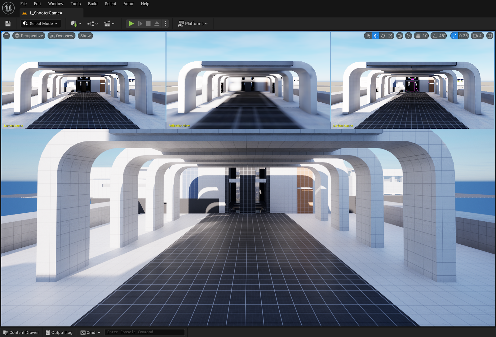

Chapter 12 · Trace one complete frame
Follow the courtyard through one frame
After this chapter: predict the work caused by moving a crate, bending an elbow, changing a material, or switching a light. Prerequisites: GPU Scene, deferred rendering, and Lumen's representations.
We now have enough pieces to reason about an entire scene without remembering every class. Use the following as a logical dependency trace, not a literal serial list of GPU events. Unreal overlaps CPU tasks and may schedule GPU passes differently according to enabled features. The dependencies are the durable part: a consumer needs a coherent version of its inputs, and a reused resource must remain alive.
- Gameplay changes the world. Crate 37 moves, the guard bends an elbow, and the lamp turns blue. The crate mesh's local-space triangles remain shared. The guard needs a new pose. The light changes illumination data; it does not repaint the crate's wood material.
- Rendering accepts an ordered update. The relevant component paths notify the scene. Render-owned records receive new placement, pose, light and bound information. Moving a crate need not rebuild its vertex buffers. Replacing its mesh or changing an opaque material to a translucent one may affect representation selection and cached draw work.
- Persistent GPU data becomes current. Dirty primitive/instance ranges are uploaded; animation/deformation data becomes available through the selected path. Current and previous rendered states remain distinguishable. The GPU can now fetch a crate's transform by identity rather than receiving an entire object description with every draw.
- Views choose work. The main camera, lamp shadows and any reflection/capture views need different visible subsets. The arch may hide a crate from the camera while the crate still casts a visible shadow. Nanite selects appropriate resident detail for its supported geometry. Conventional geometry produces work through its mesh-pass path.
- Visible surfaces become shading inputs. The arch and crates contribute surface properties through their respective geometry paths. The guard supplies deformed positions and shading attributes. Material evaluation supplies wood roughness, stone normals and metal response; these are not final colors under the blue lamp.
- Direct visibility and light produce illumination. Shadow information tests whether the lamp reaches each surface. Light evaluation combines that result with surface response and viewing direction. The emissive bulb and the actual light are separate inputs even when artists make them look like one object.
- Indirect-light work sees its own scene. Lumen uses screen information and its enabled tracing representations, together with material/lighting caches. A skeletal guard supported by the hardware tracing path is not thereby inserted into the software mesh-distance-field representation. A correct primary image does not prove complete GI coverage.
- Other contributions are composed. The glass, groom, smoke, fog and other effects use their supported paths and integrate at the appropriate stages. Temporal reconstruction uses motion and history. The image is presented; scene resources and reusable caches survive while frame-local work can be recycled after its last use.
The concrete anchors for this trace are the registration path, transform update payload, retained GPU buffers, and the renderer sources cited in the deferred and Lumen chapters. This trace describes causality, not a captured performance measurement.
A change has a footprint
Ask two questions for every edit: which source data changed? and which derived representations depend on it? The following is a design reasoning table, not a promise that Unreal always performs the minimum possible update.
| Edit | Primary state | Derived work to consider | What may remain shared |
|---|---|---|---|
| Move crate 37 | Instance transform, world bounds, previous state | Culling, shadows, ray-instance placement, GI placement/history | Mesh vertices and material shader |
| Bend the guard's elbow | Pose/deformation and conservative bounds | Deformed camera/shadow geometry, motion vectors, supported ray geometry, cache coverage | Topology, textures, material program |
| Change wood roughness parameter | Material parameter data | Surface shading and caches that captured old material values | Mesh topology and placement; compatible compiled shader variant |
| Change a wall from opaque to masked | Material feature/coverage contract | Shader/raster bins, depth/shadow coverage, ray opacity handling and built approximations | Vertex positions, if no deformation changed |
| Turn the blue lamp off | Light state | Direct lighting; affected cached lighting/history according to update budgets | Geometry and surface roughness |
Chapter 13 · A proposed Arda design
Design the contracts before adding rendering features
After this chapter: outline a modular scene layer whose identities, ownership and updates remain useful when new geometry and GI systems arrive. Prerequisite: the complete frame trace. Everything labeled “proposed” below is a design recommendation, not an implemented Arda API.
The inspected Arda infrastructure build contains math, backend/providers, a generic graph and a dependency graph. It does not currently add a scene module. The existing FArdaDependencyGraph describes persistent executable work, while ArdaBackend provides the device/resource boundary. These are useful foundations, but neither establishes the identity, sharing rules or invalidation semantics of a courtyard object. Current module boundary
Proposed central contract: a scene owns stable logical records and publishes coherent rendering snapshots; replaceable providers derive the geometry and lighting representations supported by each target. A renderer reads those snapshots and expresses work through the graph. Keep GPU allocation and completion behind the backend. This separates the things that must remain stable when an object changes from the things a rendering technique can replace.
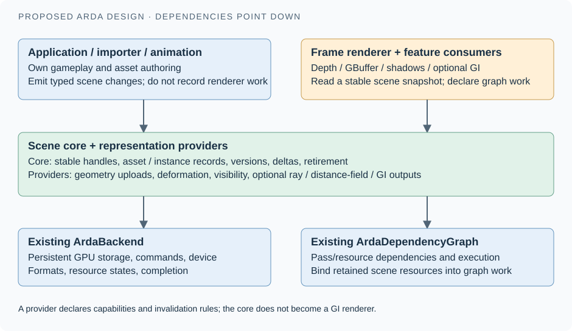

A small set of records, with explicit relationships
Start with an asset record for immutable or versioned reusable geometry. Give it a content/version identity, local bounds, sections, attribute layout and provider-owned resource references. Keep streaming residency separate from logical existence: an asset can exist while only coarse detail is available. A mesh file name is not a sufficient resource identity after a reimport.
An instance record references a geometry asset, a material-binding set, current placement, previous rendered placement, bounds and visibility flags. A deformation record references pose/morph/cloth data and its version, when present. Separate these so one rigid asset can serve many placements and one skeletal asset can serve multiple independently animated guards. Decide explicitly when poses can be shared; do not infer that from asset sharing.
A material record identifies surface programs and feature requirements; a material instance supplies compatible parameter values. A light record describes emitted light and policy. A view record describes an observer and history. Lights may be attached to scene objects in the application, but light storage should not require allocating fake triangle geometry.
Use generational handles for public identity: conceptually an index plus a generation counter that changes when a slot is reused. Indirection maps that identity to compact CPU/GPU storage. A stale handle must fail validation instead of silently referring to a newly spawned crate. The generation protects CPU identity; it does not permit reuse of GPU-visible storage while an older submission is still in flight.
Add geometry by declaring consumers and update rules
A future GeometryProvider is an architectural role, not a proposed mandatory virtual method on every triangle. It advertises which representations it can produce: raster surface streams, deformation output, a ray-intersection representation, a distance field, or a volume traversal representation. It also specifies attribute schema, bounds calculation, resource lifetime and the edits that invalidate each output. Bulk provider calls can process arrays of changes; the shader side uses IDs and tables.
For a simple triangle provider, the first outputs may be just vertex/index buffers and conservative bounds. A strand provider can supply a different raster path. A volume provider can supply density sampling and integration. An optional ray provider may produce acceleration structures. A consumer asks for the capability it needs and gets a supported representation, a documented fallback, or an explicit absence. It must never silently pretend an unsupported volume is an opaque triangle mesh.
| Provider | Minimum useful output | Optional outputs | Invalidating change |
|---|---|---|---|
| Rigid indexed mesh | Surface streams + local bounds + sections | BLAS, distance field, cluster pages, capture geometry | Topology/attribute edits; movement updates placement |
| Skinned surface | Pose-aware positions + previous positions + bounds policy | Updated ray geometry, simplified capture path | Pose, morph, cloth and topology versions |
| Strands / splats | Coverage/reconstruction rule + shading inputs | Shadow and ray representations supported by that implementation | Control points, widths, opacity and simulation |
| Participating volume | Density/extinction/emission sampling + integration bounds | Light cache, acceleration, shadow transmittance | Field values, transforms and sampling parameters |
This is where Unreal's lesson is most useful: vertex factories isolate geometry access in the conventional mesh pipeline, but Nanite, hair and volumes still need specialized processing. Aim for a shared lifecycle and capability vocabulary, not one universal draw function that accumulates flags for every future technique.
Make the update transaction the unit of consistency
Publish a batch of typed edits with a monotonically increasing scene epoch. Treat the epoch as “these records belong together.” Applying a transform change should update its bounds and dirty dependencies before the new snapshot becomes renderable. An application may use a dedicated render thread or another scheduling model; the contract should require ordered ownership transfer rather than hardcode one OS thread layout.
// Proposed pseudocode; these are not existing Arda APIs.
changes = beginSceneUpdate();
changes.setTransform(crate37, newTransform);
changes.setPose(guard, newPose);
snapshot = publishCoherentScene(changes); // one consistent version
uploads = prepareChangedRanges(snapshot);
work = buildFrameWork(snapshot, views, uploads);
ticket = submit(work);
retain(snapshot.resources, until = ticket.completed);
// IDs / buffer regions removed by later updates retire only after last use.Use separate versions for geometry, transform, deformation, material parameters, material features and lighting. A derived output records which input versions it consumed. Updating roughness should not mark every vertex buffer dirty; changing topology must invalidate more than the object transform. Coalesce repeated edits to the same object within a batch, but preserve ordering when an object is removed and replaced. Define spawn, teleport and camera-cut rules for previous state so history does not interpolate across unrelated objects.
For GPU storage, begin with persistent buffers and dirty-range uploads. Double/triple buffering or fence-aware region allocation can keep earlier submissions valid. A packed array is attractive for locality; a mapping table preserves stable handles when entries move. Record upload bytes and relocation counts to detect when a supposedly incremental system rewrites the whole world.
Connect the scene to the existing graph honestly
Use the graph to express dependencies such as upload → deform → build/refit ray geometry → trace, or upload → cull → generate indirect arguments → draw. These are work/resource dependencies, different from attachment parenthood. The graph can reason about declared reads and writes; it cannot infer that a raw CPU pointer's transform changed.
Arda already supports named BindExternalResource buffer bindings and BindExternalValue values on FArdaDependencyGraph. The source explicitly distinguishes borrowed raw pointers from retained shared/native references. It also says rebinding an external resource invalidates executable revisions. A scene integration should therefore distinguish “same retained buffer, new contents” from “new physical buffer identity”; rebinding every transform edit could undermine graph reuse. Validate the actual graph resource declarations and synchronization for the chosen update path. Binding ownership and invalidation
The existing graph offers separate submit and wait operations and a blocking execute convenience. This is a useful completion boundary for retirement, but a render-thread queue being empty is not equivalent to a GPU ticket completing. Check the exact graph execution guide and backend command contracts when implementing the provider. Current execution interface
Treat GI as another scene consumer from day one
Reserve an interface for a representation's coverage and freshness: supported objects, space covered, source versions, available detail and last successful update. GI can then distinguish “geometry absent,” “lighting cache missing,” and “lighting one epoch behind.” This avoids a single ambiguous ready flag that hides why indirect lighting is wrong.
Do not require a Lumen-style cache in the core. A first GI implementation might trace all supported mesh geometry and use a small probe cache. A later one might add cards, surfels, clipmaps or reservoir-based reuse. They all need identity, updates, material evaluation and resource lifetimes, but they do not all need the same spatial structure. A cache has to state what it approximates and how stale it may become.
Large worlds add precision and residency to the same contract. Choose a high-precision application/world convention, then a GPU coordinate representation relative to a stable origin or view as appropriate. Record origin changes and apply them consistently to current/previous transforms, bounds and caches. Do not copy a floating-point world coordinate into a shader and assume arbitrarily large distances retain local detail. The Unreal shader accessors discussed in GPU Scene show why decoding and coordinate conventions belong to the CPU/GPU data contract.
Build it in stages with visible acceptance criteria
- Retained rigid scene. Draw the arch and 1,000 crates using shared mesh storage and independent handles. Move one crate; measure its update bytes. Remove and recreate it while multiple frames are in flight; no stale references or flicker may appear.
- Surface and light separation. Add material sections, parameters, deferred surface buffers, a direct light and shadowing. Changing light color must preserve material data. Changing roughness must preserve geometry.
- Deformation and multiple views. Animate the guard; verify main view, shadow view, previous-frame motion and conservative bounds agree. Add a second camera so no scene state incorrectly lives inside the first view.
- Visibility and residency. Add spatial culling, GPU instance selection and indirect work where capabilities permit. Compare the image with a deliberately uncullled reference; missed visible objects are correctness bugs. Exercise missing-detail fallback under a small streaming budget.
- Optional ray representation and GI. Add supported acceleration structures, visualizations of ray geometry and a modest GI consumer. Demonstrate the effect of stale lighting separately from missing geometry. Only then evaluate whether virtual geometry or a more elaborate lighting cache solves the measured bottleneck.
Track CPU update/collection time, bytes uploaded, resident geometry and cache memory, visible instances/clusters, shading-bin count, ray-structure build/refit time and GPU pass time. Include worst-case motion, camera cuts, material swaps, spawning and streaming churn. A large stationary screenshot is not sufficient evidence for the update architecture.
Chapter 14 · Unreal lab & self-test
A practical Unreal investigation
After this chapter: locate a representation mismatch rather than changing unrelated rendering settings. Prerequisites: the geometry families, deformation and GI chapters. These are reproducible editor exercises to perform on a supported project, not measurements executed during this documentation work.
Build a small scene with a large explanatory range
Use a desktop deferred project with the relevant features available on the target RHI. Place a cube as the crate, a more detailed mesh as the arch, a skeletal character, a floor/wall pair, a movable point light, an opaque wood material, a translucent glass plane and a Niagara sprite effect. Enable Lumen and Nanite only where the project/platform and selected assets support them. Save the scene before experimenting. This layout is intentionally simple enough that you can predict which representation should change.
- Shared geometry. Place two static mesh components using the same cube asset. Give only one a material override and move it. Confirm the other stays put. Then create an instanced component containing many cubes and repeat the placement experiment per instance. Asset identity, component identity and instance placement are now visibly different.
- Detail selection. Enable Nanite on the detailed arch, inspect Nanite Triangles and Clusters views, and move the camera. Fine detail changes with view and residency. Compare with the conventional mesh's discrete LOD choices. The debug colors identify geometry structure, not albedo or illumination.
- Material versus illumination. In the material editor expose roughness as a scalar parameter. Inspect the applicable buffer visualization for surface properties, then change light intensity. Roughness should remain a material property while the lit image changes. Switch the material blend mode in a separate test; this is a pipeline/coverage change, unlike adjusting a compatible scalar parameter.
- Motion and bounds. Animate the character and use a controlled WPO material on a mesh. Examine its silhouette, shadow, motion-vector visualization and bounds. Raise deformation amplitude until the bounding policy becomes relevant. A disappearing piece suggests a visibility bound problem before it suggests a lighting problem.
- GI representations. Compare Lumen Scene, Reflection View and Surface Cache. Use Mesh Distance Fields/Global Distance Field visualizations when that tracing path is enabled. Disable screen traces temporarily through Lumen viewport controls to expose what off-screen scene representations can contribute; restore the original configuration afterward. Moving a camera can change a screen-space answer without changing the world.
- Change and wait. Toggle the lamp or change a large wall's color. Observe direct changes and the convergence of cached indirect illumination. Make a camera cut and observe coverage/history recovery. Record enabled tracing mode, scalability and view settings alongside observations.
Epic documents the relevant diagnostic views in View Modes and Lumen Technical Details. Menus and supported views vary with renderer configuration. Use the source evidence in this page to resolve a discrepancy rather than treating an older screenshot as an exact description of this checkout.
Symptoms point to contracts
| Symptom | Likely boundary to inspect | Evidence and next action |
|---|---|---|
| Wind-bent foliage vanishes | Deformation versus conservative bounds | Inspect bounds and Nanite/primitive visibility; verify WPO displacement limits. Do not disable all culling as a permanent fix. |
| Object appears in camera but not an off-screen reflection | Camera path versus selected ray representation | Inspect hardware/software tracing mode, object eligibility and fallback geometry. Restore supported representation or make the omission explicit. |
| Pink Surface Cache regions | Material capture coverage | Inspect cards and asset partitioning. Refine capture coverage or split complex geometry; changing light brightness does not create coverage. |
| Lighting changes trail a moving camera | Cache residency/update budget and temporal history | Compare Lumen Scene coverage and update timing. Determine whether data is missing, stale or merely temporally filtered. |
| Correct new object gets an old object's motion | Reused identity or previous-state initialization | Log handle generations, epochs and retirement. Reset history on spawn/teleport; defer GPU slot reuse. |
| Instancing saves memory but frame cost remains high | Visible work, shading, overdraw or shadow cost | Measure pass timings and work counts. Shared vertices do not eliminate repeated visible samples or repeated view work. |
| Shader hitch after a material change | Compiled feature/permutation and PSO availability | Distinguish a compatible parameter update from a static feature change; inspect compilation/PSO diagnostics and cook/precache coverage. |
| Arda uploads all instances after one edit | Dirty-range propagation or identity/storage coupling | Log bytes uploaded and records touched. Separate a placement edit from resource replacement and graph rebinding. |
Explain the system without Unreal names
A reader understands the architecture when they can explain it using relationships before class names. Try these questions before opening the answers.
1. Why is a scene neither an object tree nor a list of draw calls?
The tree expresses ownership and attachments; draw calls express some rendering work. The scene also needs shared assets, independent placements, persistent identity and multiple derived representations. A view selects work from that retained state. One object may produce many draws, or many objects may share one batch.
2. A red wall is outside the camera view. Why might it still matter?
Its geometry can block shadow or indirect rays, and its material can affect bounced light or reflections. Camera visibility does not establish membership in other views or tracing representations. GI support still depends on the selected path and coverage.
3. Why can't GPU Scene alone answer every GI ray?
Addressable transforms and primitive records do not provide a universal spatial intersection structure or all material/lighting samples. GI needs suitable geometry (such as distance fields or ray acceleration structures) and a way to evaluate or reuse lighting at hits.
4. Why does adding a material feature sometimes alter geometry work?
Opacity masking changes sample coverage; WPO changes vertex positions; displacement may create detail. Those features can participate in depth/shadow/visibility work before final surface shading. A material is not always a function evaluated only after visibility is complete.
5. What is the minimum contract for safely removing an instance?
Stop publishing it in new snapshots, preserve references needed by already recorded/submitted work, invalidate dependent derived data, then retire storage after its last GPU use. Reused logical slots need new generations so stale CPU handles cannot select a new object.
15 · Audit trail
Sources, version boundary, and image credits
This study was researched on 13 October 2026 against D:\UnrealEngine, whose Engine/Build/Build.version identifies 5.8.1 and whose Git HEAD is 71fe36aac5a8df5ccd66c763ffc902b29b6a9c43. This pins the implementation evidence; it is not a claim about every installed Unreal release. Public documentation can contain older screenshots or inconsistent feature summaries. Where those conflict, this article narrows its claims to checked local code and explicit gates.
The 2021 Nanite deep dive by Brian Karis, Rune Stubbe and Graham Wihlidal supplies the problem-first teaching inspiration, especially its opening comparison of representations and retained GPU pipeline. The implementation here is independently traced through the newer local source. Source references below are evidence for particular claims, not a substitute for a complete engine API reference.
Unreal source links require an Epic-linked GitHub account with repository access. The file path and line range remain usable in the local checkout even if a browser cannot open those links. Arda references describe the inspected working tree; the proposed scene layer is not implemented. Machine-readable evidence and source hashes.
Architecture and GPU Scene (41 source ranges)
Engine/Source/Runtime/Renderer/Private/ScenePrivate.h:1619–1635
Persistent renderer state, independent of view or frame; optional UWorld; derives FSceneInterface.
Engine/Source/Runtime/Engine/Classes/Engine/World.h:1498–1507
World exposes an FSceneInterface pointer for renderer scene.
Engine/Source/Runtime/Engine/Classes/GameFramework/Actor.h:1021–1024
Actor root component defines its transform.
Engine/Source/Runtime/Engine/Classes/Components/SceneComponent.h:82–119
Transform and attachment hierarchy, explicitly no rendering/collision on base scene component.
UPrimitiveComponent::CreateSceneProxy
Engine/Source/Runtime/Engine/Classes/Components/PrimitiveComponent.h:2391–2398
Virtual proxy factory defines primitive rendering representation; base returns null.
Engine/Source/Runtime/Engine/Public/PrimitiveSceneProxy.h:286–304
Mirrors primitive data for rendering parallel to game thread.
Engine/Source/Runtime/Renderer/Public/PrimitiveSceneInfo.h:266–339
One-to-one renderer bookkeeping for proxy; stable component ID; cached meshes; distance-field and Lumen associations.
UPrimitiveComponent::CreateRenderState_Concurrent
Engine/Source/Runtime/Engine/Private/Components/PrimitiveComponent.cpp:620–650
Update bounds and conditionally add component through context or world scene interface.
FScene::BatchAddPrimitivesInternal
Engine/Source/Runtime/Renderer/Private/RendererScene.cpp:1445–1490
Obtain/create proxy, skip null, construct scene info and copy initial transform/bounds into creation command.
ENQUEUE_RENDER_COMMAND(AddPrimitiveCommand)
Engine/Source/Runtime/Renderer/Private/RendererScene.cpp:1504–1519
Ordered render command sets transform, creates RT resources, and adds scene info.
FScene::Primitives / PrimitiveTransforms / PrimitiveBounds
Engine/Source/Runtime/Renderer/Private/ScenePrivate.h:1689–1719
Dense CPU scene arrays are indexed by FPrimitiveSceneInfo::PackedIndex.
Engine/Source/Runtime/Engine/Public/SceneInterface.h:115–169
Engine public scene interface for add/remove/transform/instance updates.
UPrimitiveComponent::SendRenderTransform_Concurrent
Engine/Source/Runtime/Engine/Private/Components/PrimitiveComponent.cpp:655–667
Update bounds and notify scene transform update.
FScene::UpdatePrimitiveTransformInternal
Engine/Source/Runtime/Renderer/Private/RendererScene.cpp:1613–1643
Proxy recreation conditional; update payload includes transform, bounds, attachment root, and previous transform.
FScene::BatchRemovePrimitivesInternal
Engine/Source/Runtime/Renderer/Private/RendererScene.cpp:2022–2067
Disassociate proxy and enqueue scene removal/resource teardown.
FPrimitiveSceneProxy::GetDynamicMeshElements
Engine/Source/Runtime/Engine/Public/PrimitiveSceneProxy.h:492–504
Dynamic collection thread safety, mirroring requirement, callback immutability and referenced-memory lifetime.
ISceneExtension / ISceneExtensionUpdater / ISceneExtensionRenderer
Engine/Source/Runtime/Renderer/Private/SceneExtensions.h:23–107
Persistent extension, change-set updater, view/render hooks and previsibility-before-GPU-update caveat.
Engine/Source/Runtime/Renderer/Private/GPUScene.h:337–354
Pooled primitive, instance, payload, lightmap buffers with scatter upload helpers.
FGPUScene::Update / AddPrimitiveToUpdate
Engine/Source/Runtime/Renderer/Private/GPUScene.h:254–281
Pending primitive/instance updates and cumulative dirty flags.
FPrimitiveUniformShaderParameters
Engine/Source/Runtime/Engine/Public/PrimitiveUniformShaderParameters.h:14–71
Primitive instance offsets/counts, current/previous transforms, bounds, flags, and related shader parameters.
Engine/Source/Runtime/Engine/Public/PrimitiveSceneShaderData.h:14–37
Fixed-stride FVector4f primitive packing and BuildDataFromProxy.
Engine/Shaders/Private/SceneData.ush:350–374
GPU primitive lookup indexes by PrimitiveId and equates it to PersistentPrimitiveIndex in the buffer path.
Engine/Shaders/Private/SceneData.ush:227–261
Decoded instance contains IDs, transforms, bounds and feature data.
Engine/Shaders/Private/SceneData.ush:1111–1165
Conditional compressed transforms, primitive lookup, derived fields; layout synchronization requirement.
Engine/Shaders/Private/SceneData.ush:999–1055
Payload address is base + relative instance ID * stride; field presence controlled by flags.
Engine/Source/Runtime/Renderer/Public/PrimitiveSceneInfo.h:451–476
Packed index can change on scene add/remove; persistent index remains stable only while primitive remains registered.
FGPUScene::AllocateInstanceSceneDataSlots / FreeInstanceSceneDataSlots
Engine/Source/Runtime/Renderer/Private/GPUScene.h:239–252
Instance-range allocation/free and reuse.
FGPUScene::AddPrimitiveToUpdate
Engine/Source/Runtime/Renderer/Private/GPUScene.cpp:1755–1778
Dirty list deduplication and flag accumulation by persistent primitive index.
FInstanceSceneData previous transform decode
Engine/Shaders/Private/SceneData.ush:1211–1237
Dynamic previous transform payload or derivation from primitive WorldToPreviousWorld.
Engine/Source/Runtime/Renderer/Public/InstanceCulling/InstanceCullingContext.h:99–113
GPU-Scene-capable draw culling context; HZB occlusion depends on provided HZB and setting.
Engine/Shaders/Private/InstanceCulling/BuildInstanceDrawCommands.usf:117–230
Conditional instance distance/screen-size/frustum/HZB tests with instance bounds.
Engine/Source/Runtime/Engine/Public/MeshBatch.h:361–405
Geometry-independent draw description with vertex factory/material proxy, elements, pass flags and primitive type.
Engine/Source/Runtime/Engine/Public/MeshBatch.h:231–301
Index buffer/ranges, instance counts, indirect args, and dynamic primitive-data lifetime.
Engine/Source/Runtime/RenderCore/Public/VertexFactory.h:652–676
Vertex data-source adapter and input streams.
Engine/Source/Runtime/Renderer/Public/MeshPassProcessor.h:2255–2319
Transforms FMeshBatch descriptions into FMeshDrawCommand; pass shaders/material/render state supplied.
Engine/Source/Runtime/Renderer/Public/MeshPassProcessor.h:1272–1319
Cached bindings/state/draw parameters; external resource lifetime responsibility and instancing caveat.
FPrimitiveSceneProxy::DrawStaticElements
Engine/Source/Runtime/Engine/Public/PrimitiveSceneProxy.h:434–439
Static elements submitted once at proxy creation, rendered when statically relevant.
FStaticMeshSceneProxy::DrawStaticElements
Engine/Source/Runtime/Engine/Private/StaticMeshSceneProxy.cpp:1402–1458
Static mesh describes LOD/section mesh batches and uses GetMeshElement.
FScene cached mesh commands and Nanite pipelines
Engine/Source/Runtime/Renderer/Private/ScenePrivate.h:1650–1670
Conventional cached draw lists coexist with separate Nanite raster/shading pipelines.
Engine/Source/Runtime/RenderCore/Public/RenderGraphBuilder.h:45–50
Pass parameters govern resource barriers/lifetimes; graph compiled/culled/executed by Execute.
Engine/Source/Runtime/Renderer/Private/GPUScene.cpp:1031–1042
Persistent pooled GPU Scene buffers registered into a graph.
Geometry, Nanite and deformation (38 source ranges)
Engine/Source/Runtime/Engine/Public/StaticMeshResources.h:193–220
Static-mesh sections hold a material index, first index, triangle count, and rendering flags.
Engine/Source/Developer/NaniteBuilder/Private/ClusterDAG.cpp:1464–1584
Triangle child clusters are merged, simplified, split into parent clusters, and assigned parent LOD error.
Engine/Source/Runtime/Engine/Public/StaticMeshResources.h:311–320
Static-mesh vertex data is split into vertex attributes, positions, and colors.
Engine/Source/Runtime/Engine/Public/StaticMeshResources.h:417–484
A conventional static-mesh LOD has sections, vertex buffers, and index buffers.
Engine/Source/Runtime/Engine/Classes/Engine/StaticMesh.h:602–646
The static-mesh asset owns FStaticMeshRenderData.
Engine/Source/Runtime/Engine/Public/StaticMeshResources.h:771–792
Conventional LOD resources, vertex factories, Nanite resources, and a ray-tracing proxy coexist as distinct fields.
Engine/Source/Runtime/Engine/Public/Rendering/SkeletalMeshLODRenderData.h:136–161
Skeletal LOD data has index/vertex streams, skin weights, cloth mapping, and morph data.
ULandscapeComponent::HeightmapTexture
Engine/Source/Runtime/Landscape/Classes/LandscapeComponent.h:568–580
Landscape component stores heightmap and weightmap textures.
UProceduralMeshComponent::CreateMeshSection
Engine/Plugins/Runtime/ProceduralMeshComponent/Source/ProceduralMeshComponent/Public/ProceduralMeshComponent.h:149–218
Procedural mesh creation accepts indexed vertex attributes; section updates preserve topology.
Engine/Source/Runtime/GeometryFramework/Public/Components/DynamicMeshComponent.h:159–171
The component wraps UDynamicMesh/FDynamicMesh3 and supports partial render updates and chunking.
Engine/Plugins/Runtime/GeometryCache/Source/GeometryCache/Classes/GeometryCache.h:23–72
Geometry-cache assets store material references and tracks.
UGeometryCacheComponent::TickAtThisTime
Engine/Plugins/Runtime/GeometryCache/Source/GeometryCache/Classes/GeometryCacheComponent.h:232–239
Geometry-cache playback accepts a time and playback flags.
Engine/Source/Runtime/Engine/Classes/Components/InstancedStaticMeshComponent.h:158–177
ISM derives from static-mesh component and has per-instance data and previous transforms.
UHierarchicalInstancedStaticMeshComponent::ClusterTreePtr
Engine/Source/Runtime/Engine/Classes/Components/HierarchicalInstancedStaticMeshComponent.h:135–163
HISM adds a cluster tree and mapping between tree and per-instance data order.
USplineMeshComponent::SplineParams
Engine/Source/Runtime/Engine/Classes/Components/SplineMeshComponent.h:119–125
Spline meshes derive from static-mesh components and add spline parameters.
UGeometryCollectionComponent::SetRestCollection
Engine/Source/Runtime/Experimental/GeometryCollectionEngine/Public/GeometryCollection/GeometryCollectionComponent.h:865–877
A Geometry Collection component references a rest collection.
UNiagaraSpriteRendererProperties
Engine/Plugins/FX/Niagara/Source/Niagara/Public/NiagaraSpriteRendererProperties.h:110–117
Niagara has a distinct sprite-renderer property type.
UNiagaraRibbonRendererProperties
Engine/Plugins/FX/Niagara/Source/Niagara/Public/NiagaraRibbonRendererProperties.h:193–201
Niagara has a distinct ribbon-renderer property type.
UNiagaraMeshRendererProperties
Engine/Plugins/FX/Niagara/Source/Niagara/Public/NiagaraMeshRendererProperties.h:126–134
Niagara has a distinct mesh-renderer property type.
Engine/Plugins/Enterprise/LidarPointCloud/Source/LidarPointCloudRuntime/Public/LidarPointCloudComponent.h:24–71
The LiDAR plugin has a point-cloud component with point shape and orientation settings.
Engine/Source/Runtime/Engine/Classes/Components/HeterogeneousVolumeComponent.h:20–72
The volume component has SVT streaming controls and a dynamic material instance.
SparseVolumeTexture page-table fields
Engine/Source/Runtime/Engine/Classes/SparseVolumeTexture/SparseVolumeTexture.h:38–52
SVT data contains 3D page-table resolution and bounds.
Engine/Source/Developer/NaniteBuilder/Private/ClusterDAG.h:65–102
Nanite build data supports adding meshes, reduction, and finding a cut through cluster/group relationships.
Engine/Source/Runtime/Engine/Public/Rendering/NaniteResources.h:452–466
Root pages load with resources; remaining pages stream; hierarchy and dependency data are stored separately.
Engine/Source/Runtime/Renderer/Private/Nanite/NaniteCullRaster.cpp:802–904
Nanite instance-culling compute shader registration.
Engine/Source/Runtime/Renderer/Private/Nanite/NaniteCullRaster.cpp:939–1023
Nanite hierarchy-node and cluster-culling compute shader registration.
Engine/Shaders/Private/Nanite/NaniteClusterCulling.usf:258–279
View and instance-dependent projected scale is compared with hierarchy LOD error.
CVarNaniteComputeRasterization
Engine/Source/Runtime/Renderer/Private/Nanite/NaniteCullRaster.cpp:79–90
Compute rasterization can be disabled so work uses hardware; programmable rasterization is separately controlled.
Engine/Source/Runtime/Renderer/Private/Nanite/NaniteCullRaster.cpp:1708–1715
Nanite's micropolygon rasterizer is implemented as a compute shader; hardware raster shader registrations appear at 1911, 2059, and 2226 in the same file.
Engine/Source/Runtime/Renderer/Private/Nanite/NaniteShading.cpp:654–665
Nanite builds shading commands independently of geometry culling/rasterization.
Engine/Source/Runtime/Renderer/Private/Nanite/NaniteShading.cpp:1670–1728
Nanite base-pass dispatch takes raster results and uses VisBuffer64.
Nanite capability console variables
Engine/Source/Runtime/Engine/Private/Rendering/NaniteResources.cpp:100–140
Spline and skinned support default on; translucency, foliage, assemblies, voxels, and curves default off. Translucency is labeled Heavy WIP / R&D.
USkinnedMeshComponent::ShouldRenderNaniteSkinnedMeshes
Engine/Source/Runtime/Engine/Private/Components/SkinnedMeshComponent.cpp:148–151
Nanite skinned selection checks support and a render switch.
Engine/Source/Runtime/Renderer/Private/Nanite/NaniteCullRaster.cpp:93–102
Runtime tessellation is an explicitly controlled renderer feature.
Engine/Source/Runtime/Engine/Private/Rendering/NaniteResources.cpp:192–204
Local mode defaults to fallback 0 and lists streamed-out mesh 1 and CLAS 2.
USceneComponent transform and attachment members
Engine/Source/Runtime/Engine/Classes/Components/SceneComponent.h:107–181
Scene components store attachment, relative translation/rotation/scale, and absolute-transform flags.
FDynamicSkelMeshObjectDataGPUSkin
Engine/Source/Runtime/Engine/Private/SkeletalRenderGPUSkin.h:64–112
Skeletal dynamic render data stores current and previous reference-to-local transforms and active morph weights.
Local vertex-factory instance transforms
Engine/Shaders/Private/LocalVertexFactory.ush:642–679
The vertex factory carries current and previous instance-to-world transformations.
Materials, renderer and Lumen (42 source ranges)
Engine/Shaders/Private/DeferredShadingCommon.ush:379–439
Logical decoded surface data separates normal, diffuse/specular/base color, roughness, model identity, depth, and optional velocity; world position can be reconstructed from depth.
Engine/Shaders/Private/ShadingModels.ush:1137–1166
Traditional shading dispatch selects separate lighting responses using ShadingModelID.
Engine/Source/Runtime/Engine/Public/Materials/Material.h:448–840
Authoring asset stores material domain, blend mode, shading model and geometry usage flags separately.
Engine/Source/Runtime/Engine/Public/Materials/MaterialInstance.h:626–858
Instances have a parent material interface, runtime parameter values, and static parameter data.
Engine/Source/Runtime/Engine/Public/MaterialShared.h:1303–1348
Shader-map identity includes source material identity, quality, feature level, usage, and static switches.
Engine/Source/Runtime/Engine/Public/MeshMaterialShaderType.h:22–54
Mesh-material shader types combine material-linked shaders with a vertex factory and permutation identity.
Engine/Source/Runtime/Engine/Public/MaterialShared.h:3211–3221
FMaterialResource derives from FMaterial.
Engine/Source/Runtime/Engine/Public/Materials/MaterialRenderProxy.h:103–164
Render proxy caches uniform expressions, provides render-thread shader-map fallback, and documents cached uniform-buffer pointer invalidation on recompilation.
Engine/Source/Runtime/Engine/Public/MeshBatch.h:361–400
Mesh batch binds elements, a vertex factory and a material render proxy, including material-pass eligibility.
FMaterial::GameThreadShaderMap / RenderingThreadShaderMap
Engine/Source/Runtime/Engine/Public/MaterialShared.h:3080–3092
Separate thread-tracked shader maps use refcounting and deferred deletion, with explicit synchronized updates.
CVarSubstrate / CVarSubstrateProjectGBufferFormat
Engine/Source/Runtime/RenderCore/Private/RenderUtils.cpp:2068–2090
Comments describe new-template defaults and existing-project retention; Blendable limits closures and Adaptive uses bitstream storage with fallback on unsupported platforms.
Engine/Source/Runtime/Renderer/Private/Substrate/Substrate.h:95–181
Substrate tracks byte and closure budgets and owns classification and closure tile buffers.
UPrimitiveComponent::CreateDynamicMaterialInstance
Engine/Source/Runtime/Engine/Private/Components/PrimitiveComponent.cpp:2620–2643
Creates and installs a dynamic material instance when needed, reuses an existing MID, and reports missing material index.
UMaterialInstanceDynamic::SetVectorParameterValue
Engine/Source/Runtime/Engine/Public/Materials/MaterialInstanceDynamic.h:106–121
Runtime vector parameter setter accepts FName and FLinearColor.
UPrimitiveComponent::InvalidateLumenSurfaceCache
Engine/Source/Runtime/Engine/Classes/Components/PrimitiveComponent.h:423–425
Explicit component method invalidates the Surface Cache for more responsive material updates.
Engine/Shaders/Private/BasePassPixelShader.usf:946–1064
Base pass evaluates material parameters then reads base color, roughness, other surface inputs with conditional Substrate paths; later output code encodes GBuffer.
FDeferredShadingSceneRenderer::Render
Engine/Source/Runtime/Renderer/Private/DeferredShadingRenderer.cpp:2925–3059
Shadow rendering, before-base-pass composition, Lumen scene lighting and base-pass submission appear as conditional dependencies; base pass accepts Nanite shading and raster results.
Engine/Source/Runtime/Renderer/Private/DeferredShadingRenderer.cpp:3388–3525
Deferred composition, indirect lighting/AO, and direct RenderLights have conditional and asynchronous scheduling.
Translucency and post processing
Engine/Source/Runtime/Renderer/Private/DeferredShadingRenderer.cpp:3995–4318
Separate Lumen front-layer reflections, translucency, velocity, visualization, and post-processing stages are explicit.
Nanite base-pass shading preparation
Engine/Source/Runtime/Renderer/Private/Nanite/NaniteShading.cpp:1784–1822
Nanite prepares shading bins from raster results and material shading commands before dispatch preparation.
Engine/Source/Runtime/Engine/Public/LightSceneProxy.h:202–244
Proxy exposes light color, volumetric contribution, light functions, IES profiles, shadow flags, and lighting channels.
FScene::AddLight / BatchAddLights
Engine/Source/Runtime/Renderer/Private/RendererScene.cpp:2305–2365
Light scene descriptors produce render proxies and queued render-side light registration.
Base-pass world-position offset
Engine/Shaders/Private/BasePassVertexShader.usf:48–83
Material WPO is added after vertex-factory world position; the shader also evaluates previous WPO in its later velocity path at line 264.
FNiagaraRendererMeshes::SetupElementForGPUScene / CreateMeshBatchForSection / GetDynamicMeshElements
Engine/Plugins/FX/Niagara/Source/Niagara/Private/NiagaraRendererMeshes.cpp:1113–1402
Niagara mesh renderer adapts particle data into GPU Scene and conventional mesh batches; separate ray-tracing collection exists at line 1619.
Volumetric fog injection shaders
Engine/Source/Runtime/Renderer/Private/VolumetricFog.cpp:318–493
Volumetric fog has grid injection parameters and shadowed light injection work distinct from opaque surface shading.
Engine/Source/Runtime/Renderer/Private/Lumen/LumenScreenProbeTracing.cpp:678–933
Screen-probe tracing reads radiance-cache inputs, attempts screen tracing, branches into hardware or software mesh-SDF/heightfield tracing, then traces global SDF and applies radiance cache as configured.
FRayTracingScene build dependencies
Engine/Source/Runtime/Renderer/Private/RayTracing/RayTracingScene.cpp:497–535
Render-graph declarations sequence top-level builds after required BLAS/CLAS writes via barriers.
RayTracingScene.Update / Build
Engine/Source/Runtime/Renderer/Private/DeferredShadingRenderer.cpp:1134–1137
Renderer explicitly updates and builds the ray-tracing scene.
CVarLumenUseHardwareRayTracing / CVarLumenHardwareRayTracingLightingMode
Engine/Source/Runtime/Renderer/Private/Lumen/LumenHardwareRayTracingCommon.cpp:16–47
Default HWRT request is 1 when available; separate modes select cache lighting, hit lighting GI+reflections, or hit lighting reflections only, retaining specified cache contributions.
Engine/Source/Runtime/Engine/Private/Rendering/NaniteResources.cpp:192–203
Default Nanite ray-tracing mode is fallback mesh; source also defines StreamOut and CLAS modes.
Engine/Source/Runtime/Renderer/Private/Lumen/LumenSceneData.h:995–1035
Frame bindings distinguish material-attribute atlases, lighting/history atlases, cards, pages, and radiance-cache indirection.
FSkeletalMeshSceneProxy::UpdateLumenCardsFromBounds
Engine/Source/Runtime/Engine/Private/SkeletalMeshSceneProxy.cpp:757–783
Skeletal cards derive from pre-skinned bounds with explicit warning about animation mismatch.
CVarMeshCardRepresentationSkeletalMesh
Engine/Source/Runtime/Engine/Private/SkeletalMeshSceneProxy.cpp:73–78
The skeletal mesh card generation capability defaults to enabled in this checkout.
Screen-probe temporal filter controls
Engine/Source/Runtime/Renderer/Private/Lumen/LumenScreenProbeGather.cpp:158–247
Temporal accumulation exposes distance, normal, moving-lighting, fast-update, and frame-count controls.
PendingSurfaceCacheInvalidationOperations processing
Engine/Source/Runtime/Renderer/Private/Lumen/LumenScene.cpp:1500–1522
Queued primitive invalidations resolve primitive groups and invalidate their card cache data.
Lumen screen-probe temporal accumulation scaling
Engine/Source/Runtime/Renderer/Private/Lumen/LumenScreenProbeGather.cpp:570–575
Final-gather lighting update speed changes the maximum accumulated-frame scale.
FScene::UpdateLightInternal / UpdateLightColorAndBrightness
Engine/Source/Runtime/Renderer/Private/RendererScene.cpp:3502–3540
Light transform and color/intensity changes enqueue rendering-side update payloads.
Engine/Source/Runtime/Engine/Classes/Components/LocalLightComponent.h:18–57
Local lights distinguish intensity units and attenuation radius.
Engine/Source/Runtime/Engine/Classes/Components/RectLightComponent.h:24–40
Rect lights derive from local lights and expose source width and height.
USkyLightComponent / ESkyLightSourceType
Engine/Source/Runtime/Engine/Classes/Components/SkyLightComponent.h:84–131
Sky Light derives from LightComponentBase and supports captured-scene or cubemap environment data.
ULightComponentBase::HasStaticLighting / HasStaticShadowing
Engine/Source/Runtime/Engine/Private/Components/LightComponent.cpp:293–301
Static lighting requires Static mobility, while static shadowing permits non-Movable mobility.
Engine/Source/Runtime/Renderer/Public/HairStrandsInterface.h:198–205
Hair geometry choice distinguishes None, Strands, Cards, and Meshes.
Existing Arda integration boundaries (3 source ranges)
Arda infrastructure modules
Source/ArdaInfra/CMakeLists.txt:1–10
Current infrastructure module registration contains math, backend/providers, generic graph and dependency graph; no scene module is added.
FArdaDependencyGraph external bindings
Source/ArdaInfra/ArdaDependencyGraph/Public/Graph/Node/ArdaDependencyGraph.h:24–86
Raw external pointers are borrowed while shared/native references are retained; replacing resource bindings invalidates executables.
FArdaDependencyGraph execution
Source/ArdaInfra/ArdaDependencyGraph/Public/Graph/Node/ArdaDependencyGraph.h:135–158
Persistent graph supports compile, submit, wait and execute interfaces; scene-specific lifetime ownership still needs an explicit contract.
Reference images and original diagrams
The SVG diagrams are original explanatory figures for this study. The five raster images are attributed third-party Epic Games references, included for technical commentary; they are not captures from the Arda project and no license transfer is asserted. Images remain unaltered. Their publication context and hashes are recorded in the image provenance manifest.
- Medieval Game test scene rendered with Nanite (Epic, 2023 / UE5.1) — Epic Games — Unreal Engine documentation.
- Nanite triangle visualization of the Medieval Game test scene — Epic Games — Unreal Engine documentation.
- Unique programmable rasterizer bins in the same test scene — Epic Games — Unreal Engine documentation.
- Unreal Editor Lumen overview with Lumen Scene, Reflection View and Surface Cache — Epic Games — Unreal Engine documentation.
- Complex mesh with pink regions lacking Surface Cache coverage (Epic documentation, indexed UE5.7 image) — Epic Games — Unreal Engine documentation.
Maintain this study
Authored chapters and evidence are under Scripts/Docs/scene_representation/. Rebuild with python Scripts/Docs/scene_representation/build.py; check reproducibility with --check. The focused validator checks links, diagram metadata and image provenance. Use build.py --verify-source D:/UnrealEngine to compare evidence hashes after changing engine versions. Re-research changed claims before refreshing the evidence.